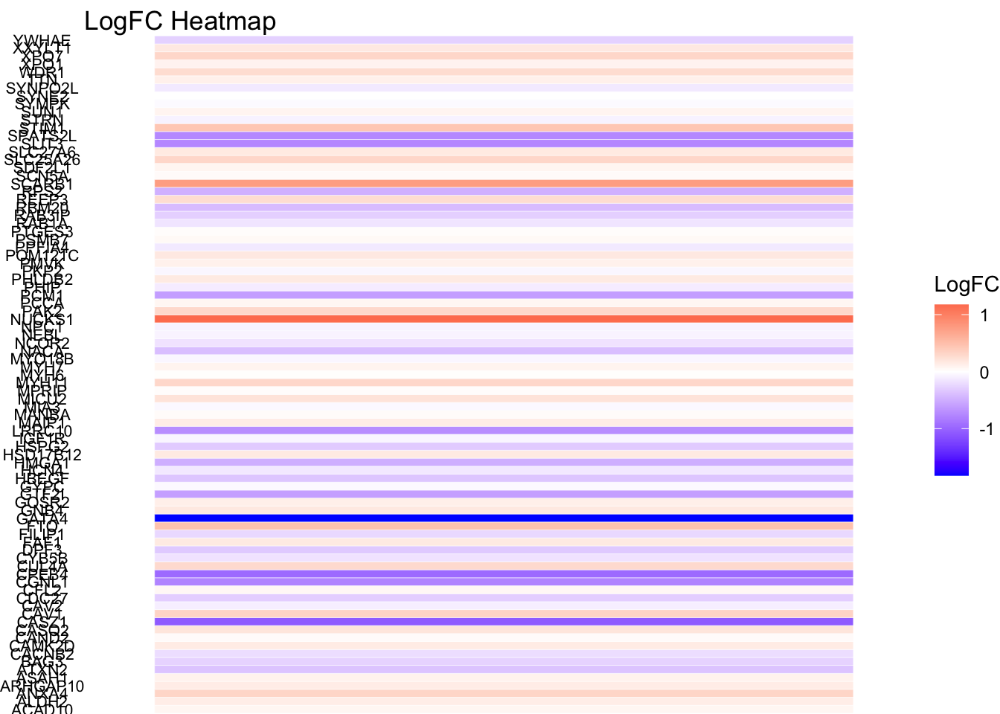
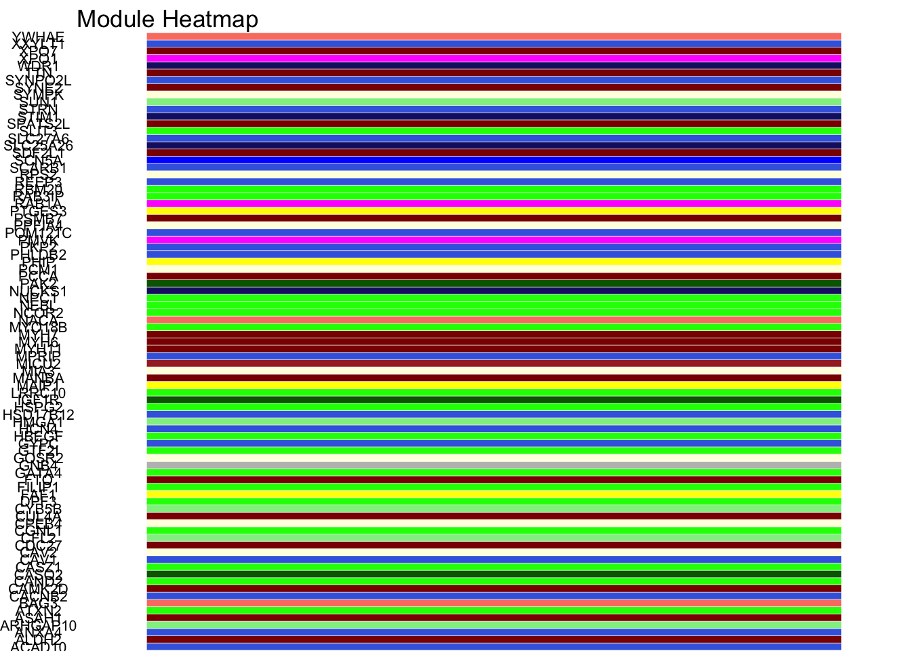
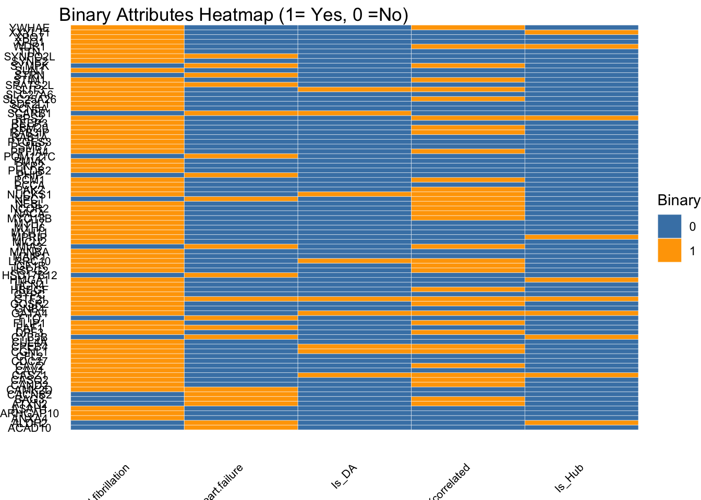
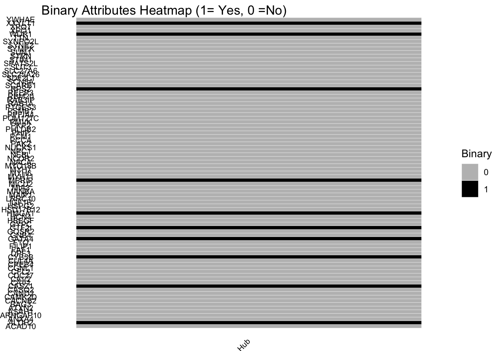
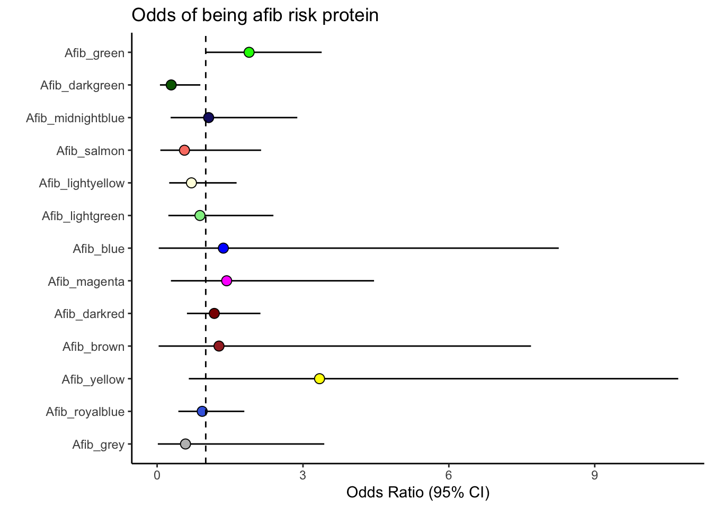
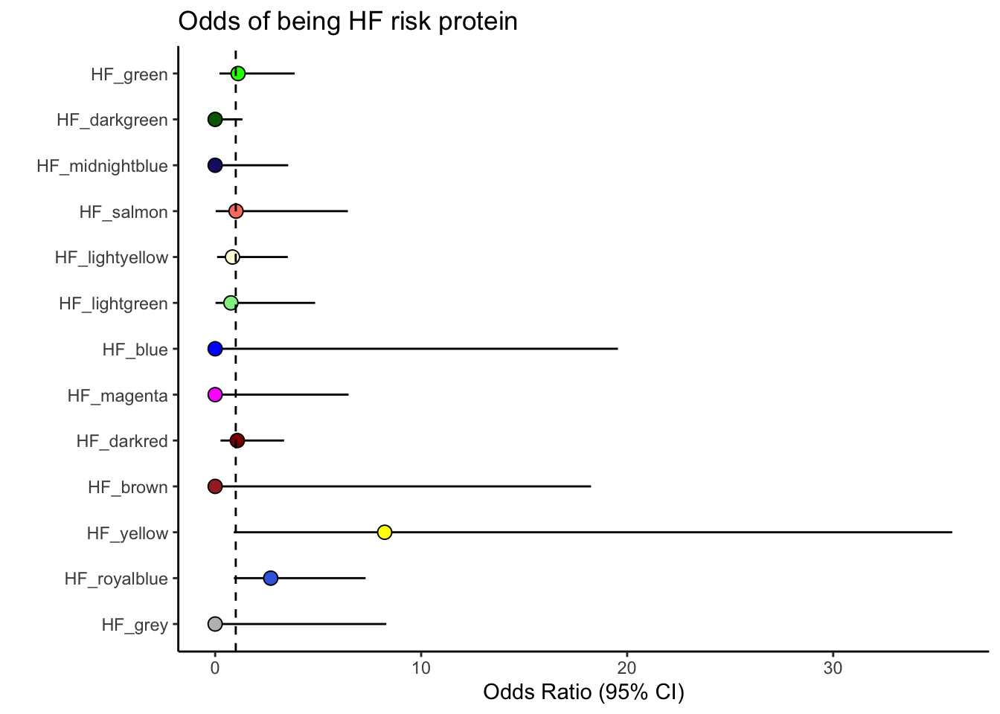

DOX_prot_Fig5_AFHF
Omar Johnson
2024-12-08
Last updated: 2024-12-08
Checks: 7 0
Knit directory: DNA_damage_DOX/
This reproducible R Markdown analysis was created with workflowr (version 1.7.1). The Checks tab describes the reproducibility checks that were applied when the results were created. The Past versions tab lists the development history.
Great! Since the R Markdown file has been committed to the Git repository, you know the exact version of the code that produced these results.
Great job! The global environment was empty. Objects defined in the global environment can affect the analysis in your R Markdown file in unknown ways. For reproduciblity it’s best to always run the code in an empty environment.
The command set.seed(20241207) was run prior to running
the code in the R Markdown file. Setting a seed ensures that any results
that rely on randomness, e.g. subsampling or permutations, are
reproducible.
Great job! Recording the operating system, R version, and package versions is critical for reproducibility.
Nice! There were no cached chunks for this analysis, so you can be confident that you successfully produced the results during this run.
Great job! Using relative paths to the files within your workflowr project makes it easier to run your code on other machines.
Great! You are using Git for version control. Tracking code development and connecting the code version to the results is critical for reproducibility.
The results in this page were generated with repository version 5596b63. See the Past versions tab to see a history of the changes made to the R Markdown and HTML files.
Note that you need to be careful to ensure that all relevant files for
the analysis have been committed to Git prior to generating the results
(you can use wflow_publish or
wflow_git_commit). workflowr only checks the R Markdown
file, but you know if there are other scripts or data files that it
depends on. Below is the status of the Git repository when the results
were generated:
Ignored files:
Ignored: .DS_Store
Note that any generated files, e.g. HTML, png, CSS, etc., are not included in this status report because it is ok for generated content to have uncommitted changes.
These are the previous versions of the repository in which changes were
made to the R Markdown (analysis/DOX_prot_Fig5_AFHF.Rmd)
and HTML (docs/DOX_prot_Fig5_AFHF.html) files. If you’ve
configured a remote Git repository (see ?wflow_git_remote),
click on the hyperlinks in the table below to view the files as they
were in that past version.
| File | Version | Author | Date | Message |
|---|---|---|---|---|
| Rmd | 5596b63 | Omar-Johnson | 2024-12-08 | Publish |
Load Libraries
Read in Data
Functions
Fig 5D Using- heatmap for heart failure and atrial fibrillation
# Data frame with
unique_genes_df_2 %>% head() Genes Modules Atrial.fibrillation Heart.failure Protein Is_DA
7 ACAD10 royalblue 0 1 Q6JQN1 0
8 ALDH2 darkred 0 1 P05091 0
9 ANXA4 royalblue 1 0 P09525 0
10 ARHGAP10 lightgreen 1 0 A1A4S6 0
11 ASAH1 darkred 1 0 Q13510 0
12 ATXN2 green 0 1 Q99700 0
Is_DOXcorrelated Is_Hub Pro_LogFC
7 0 0 0.07043402
8 0 1 0.13472763
9 0 0 0.32147822
10 0 0 0.14066972
11 0 0 0.09581227
12 1 0 -0.36774764unique_genes_df_2_DOXcorr. <- unique_genes_df_2[unique_genes_df_2$Is_DOXcorrelated ==1, ]
# Geom tile with All Risk proteins
# Plot 1: LogFC Heatmap
logfc_plot <- ggplot(unique_genes_df_2, aes(x = "LogFC", y = Genes, fill = Pro_LogFC)) +
geom_tile(color = "white") +
scale_fill_gradient2(low = "blue", mid = "white", high = "red", midpoint = 0, name = "LogFC") +
labs(title = "LogFC Heatmap", x = "", y = "Genes") +
theme_void() +
theme(axis.text.x = element_blank(), axis.ticks.x = element_blank(), axis.text.y = element_text(size = 8))
logfc_plot
module_plot <- ggplot(unique_genes_df_2, aes(x = "Module", y = Genes, fill = Modules)) +
geom_tile(color = "white") +
scale_fill_identity() +
labs(title = "Module Heatmap", x = "", y = "Genes") +
theme_void() +
theme(axis.text.x = element_blank(), axis.ticks.x = element_blank(), axis.text.y = element_text(size = 8))
module_plot
# Plot 3: Binary Attributes Heatmap
# Reshape the binary data
binary_data <- unique_genes_df_2 %>%
dplyr::select(Genes, Is_DA, Is_DOXcorrelated, Is_Hub, Atrial.fibrillation, Heart.failure) %>%
pivot_longer(cols = -Genes, names_to = "Attribute", values_to = "Value")
binary_plot <- ggplot(binary_data, aes(x = Attribute, y = Genes, fill = as.factor(Value))) +
geom_tile(color = "white") +
scale_fill_manual(values = c("0" = "steelblue", "1" = "orange"), name = "Binary") +
labs(title = "Binary Attributes Heatmap (1= Yes, 0 =No)", x = "Attributes", y = "Genes") +
theme_void() +
theme(axis.text.x = element_text(angle = 45, hjust = 1, size = 8), axis.text.y = element_text(size = 8))
binary_plot
binary_data_2 <- unique_genes_df_2 %>%
dplyr::select(Genes, Is_Hub) %>%
pivot_longer(cols = -Genes, names_to = "Attribute", values_to = "Value")
binary_plot_2 <- ggplot(binary_data_2, aes(x = Attribute, y = Genes, fill = as.factor(Value))) +
geom_tile(color = "white") +
scale_fill_manual(values = c("0" = "grey", "1" = "black"), name = "Binary") +
labs(title = "Binary Attributes Heatmap (1= Yes, 0 =No)", x = "Attributes", y = "Genes") +
theme_void() +
theme(axis.text.x = element_text(angle = 45, hjust = 1, size = 8), axis.text.y = element_text(size = 8))
binary_plot_2
Fig 5 B&C AF/HF enrrichment tests
# assigning AF/HF gene vectors
Afib_genes <- unique_genes_df_2[(unique_genes_df_2$Atrial.fibrillation == 1) & (!unique_genes_df_2$Genes %in% c("")), ]$Genes
HF_genes <- unique_genes_df_2[(unique_genes_df_2$Heart.failure == 1) & (!unique_genes_df_2$Genes %in% c("")), ]$Genes
# gene names
Afib_genes [1] "ANXA4" "ARHGAP10" "ASAH1" "CAMK2D" "CAND2" "CASQ2"
[7] "CASZ1" "CAV1" "CAV2" "CDC27" "CFL2" "CGNL1"
[13] "CPEB4" "CUL4A" "DPF3" "FAF1" "FILIP1" "GATA4"
[19] "GNB4" "GOSR2" "GTF2I" "GYPC" "HBEGF" "HCN4"
[25] "HMGA1" "HSPG2" "IGF1R" "LRRC10" "MAIP1" "MANBA"
[31] "MICU2" "MPRIP" "MYH11" "MYH6" "MYH7" "MYO18B"
[37] "NACA" "NCOR2" "NEBL" "NUCKS1" "PAK2" "PCCA"
[43] "PCM1" "PHLDB2" "PKP2" "PMVK" "PPFIA4" "PSMB7"
[49] "PTGES3" "RAB1A" "RAB3IP" "RBM20" "REEP3" "RPS2"
[55] "SCN5A" "SDF2L1" "SLC25A26" "SLC27A6" "SLIT3" "SPATS2L"
[61] "STIM1" "SUN1" "SYNE2" "SYNPO2L" "TTN" "WDR1"
[67] "XPO1" "XPO7" "XXYLT1" "YWHAE" HF_genes [1] "ACAD10" "ALDH2" "ATXN2" "BAG3" "CACNB2" "CAMK2D"
[7] "CYB5B" "FAF1" "FTO" "GTF2I" "HSD17B12" "MIA3"
[13] "NPC1" "PHIP" "POM121C" "SCARB1" "SPATS2L" "STRN"
[19] "SYMPK" "SYNPO2L" # gene set lengths
Afib_genes %>% length()[1] 70HF_genes %>% length()[1] 20# Adding risk gene info into data frame
New_RNA_PRO_DF_5 <-New_RNA_PRO_DF_3
New_RNA_PRO_DF_5$Modules [1] "darkred" "darkred" "royalblue" "royalblue"
[5] "lightgreen" "lightgreen" "lightyellow" "royalblue"
[9] "magenta" "lightyellow" "royalblue" "darkred"
[13] "grey" "royalblue" "salmon" "green"
[17] "lightgreen" "lightyellow" "darkgreen" "darkred"
[21] "lightgreen" "darkred" "darkred" "royalblue"
[25] "royalblue" "darkred" "royalblue" "midnightblue"
[29] "lightyellow" "salmon" "lightgreen" "grey"
[33] "royalblue" "lightyellow" "lightgreen" "lightyellow"
[37] "royalblue" "grey" "royalblue" "royalblue"
[41] "darkgreen" "lightgreen" "darkred" "royalblue"
[45] "royalblue" "green" "darkgreen" "lightyellow"
[49] "salmon" "lightyellow" "lightyellow" "darkred"
[53] "blue" "lightyellow" "green" "green"
[57] "royalblue" "darkred" "lightyellow" "darkgreen"
[61] "darkred" "royalblue" "darkred" "lightyellow"
[65] "green" "darkred" "darkred" "darkgreen"
[69] "midnightblue" "lightyellow" "darkred" "darkgreen"
[73] "darkgreen" "green" "darkred" "salmon"
[77] "green" "lightgreen" "darkred" "darkred"
[81] "green" "royalblue" "midnightblue" "lightyellow"
[85] "blue" "lightgreen" "midnightblue" "darkgreen"
[89] "darkred" "darkred" "darkred" "darkgreen"
[93] "darkred" "darkred" "lightyellow" "green"
[97] "darkred" "midnightblue" "darkgreen" "royalblue"
[101] "darkred" "brown" "darkgreen" "salmon"
[105] "darkgreen" "lightyellow" "royalblue" "lightyellow"
[109] "lightyellow" "midnightblue" "darkgreen" "darkgreen"
[113] "royalblue" "royalblue" "royalblue" "royalblue"
[117] "brown" "midnightblue" "darkgreen" "midnightblue"
[121] "darkgreen" "green" "darkgreen" "darkred"
[125] "darkgreen" "midnightblue" "darkgreen" "brown"
[129] "lightyellow" "darkred" "darkred" "darkred"
[133] "darkred" "lightgreen" "lightgreen" "lightyellow"
[137] "lightyellow" "darkgreen" "darkred" "lightyellow"
[141] "salmon" "darkred" "darkgreen" "grey"
[145] "royalblue" "royalblue" "midnightblue" "green"
[149] "magenta" "midnightblue" "darkred" "darkred"
[153] "royalblue" "green" "magenta" "darkgreen"
[157] "salmon" "salmon" "green" "yellow"
[161] "lightyellow" "darkred" "magenta" "darkgreen"
[165] "midnightblue" "royalblue" "green" "green"
[169] "green" "royalblue" "royalblue" "lightyellow"
[173] "darkred" "yellow" "darkred" "darkgreen"
[177] "darkred" "midnightblue" "green" "green"
[181] "grey" "green" "blue" "darkred"
[185] "royalblue" "lightgreen" "midnightblue" "darkgreen"
[189] "lightyellow" "lightyellow" "green" "royalblue"
[193] "lightyellow" "magenta" "darkgreen" "royalblue"
[197] "midnightblue" "green" "lightyellow" "midnightblue"
[201] "royalblue" "royalblue" "green" "green"
[205] "royalblue" "green" "royalblue" "green"
[209] "lightgreen" "green" "darkred" "darkred"
[213] "royalblue" "darkgreen" "green" "royalblue"
[217] "green" "royalblue" "darkgreen" "salmon"
[221] "blue" "royalblue" "darkred" "lightyellow"
[225] "green" "green" "darkred" "royalblue"
[229] "lightgreen" "darkred" "lightgreen" "green"
[233] "darkgreen" "darkgreen" "darkred" "royalblue"
[237] "royalblue" "green" "darkred" "salmon"
[241] "magenta" "green" "royalblue" "lightyellow"
[245] "lightyellow" "salmon" "magenta" "green"
[249] "royalblue" "royalblue" "lightgreen" "darkred"
[253] "darkgreen" "midnightblue" "magenta" "darkgreen"
[257] "darkred" "lightyellow" "royalblue" "salmon"
[261] "darkred" "darkred" "royalblue" "brown"
[265] "salmon" "darkred" "royalblue" "midnightblue"
[269] "magenta" "green" "darkred" "blue"
[273] "darkred" "lightgreen" "lightyellow" "salmon"
[277] "royalblue" "green" "green" "green"
[281] "green" "royalblue" "darkred" "green"
[285] "lightyellow" "green" "darkred" "darkred"
[289] "darkred" "lightyellow" "salmon" "green"
[293] "darkred" "lightyellow" "royalblue" "darkgreen"
[297] "magenta" "darkgreen" "salmon" "royalblue"
[301] "darkgreen" "green" "lightyellow" "magenta"
[305] "darkred" "green" "darkgreen" "royalblue"
[309] "royalblue" "royalblue" "royalblue" "midnightblue"
[313] "lightgreen" "salmon" "darkgreen" "green"
[317] "lightyellow" "darkred" "royalblue" "darkred"
[321] "salmon" "green" "grey" "darkred"
[325] "darkred" "green" "lightyellow" "lightgreen"
[329] "midnightblue" "darkred" "green" "green"
[333] "midnightblue" "darkgreen" "royalblue" "darkgreen"
[337] "lightyellow" "darkgreen" "royalblue" "lightyellow"
[341] "midnightblue" "green" "darkgreen" "darkred"
[345] "royalblue" "royalblue" "green" "grey"
[349] "green" "magenta" "green" "darkred"
[353] "salmon" "lightgreen" "darkred" "royalblue"
[357] "darkred" "lightgreen" "darkgreen" "lightyellow"
[361] "grey" "darkred" "darkgreen" "green"
[365] "lightgreen" "lightyellow" "midnightblue" "midnightblue"
[369] "darkgreen" "lightgreen" "lightyellow" "darkgreen"
[373] "lightyellow" "green" "lightyellow" "salmon"
[377] "darkred" "salmon" "darkred" "brown"
[381] "darkred" "darkgreen" "midnightblue" "grey"
[385] "darkred" "royalblue" "darkred" "royalblue"
[389] "lightyellow" "lightyellow" "darkgreen" "royalblue"
[393] "darkred" "green" "brown" "green"
[397] "darkred" "darkred" "darkred" "darkgreen"
[401] "midnightblue" "darkgreen" "darkgreen" "darkred"
[405] "lightgreen" "darkred" "lightgreen" "royalblue"
[409] "darkgreen" "green" "darkgreen" "lightyellow"
[413] "salmon" "darkred" "darkgreen" "green"
[417] "grey" "green" "grey" "green"
[421] "royalblue" "royalblue" "green" "green"
[425] "salmon" "green" "royalblue" "midnightblue"
[429] "darkred" "darkred" "darkgreen" "lightyellow"
[433] "darkred" "green" "lightgreen" "green"
[437] "green" "midnightblue" "darkgreen" "royalblue"
[441] "midnightblue" "darkgreen" "green" "lightyellow"
[445] "brown" "darkred" "green" "salmon"
[449] "darkgreen" "darkgreen" "royalblue" "green"
[453] "royalblue" "lightgreen" "lightgreen" "midnightblue"
[457] "green" "royalblue" "midnightblue" "lightyellow"
[461] "green" "magenta" "grey" "midnightblue"
[465] "green" "darkred" "lightgreen" "green"
[469] "salmon" "blue" "green" "lightyellow"
[473] "lightyellow" "lightgreen" "lightgreen" "darkred"
[477] "darkgreen" "darkred" "green" "darkred"
[481] "blue" "darkred" "green" "darkgreen"
[485] "salmon" "green" "lightyellow" "darkgreen"
[489] "royalblue" "grey" "grey" "royalblue"
[493] "green" "darkgreen" "darkred" "darkgreen"
[497] "darkgreen" "grey" "midnightblue" "darkgreen"
[501] "lightgreen" "darkgreen" "green" "blue"
[505] "midnightblue" "darkred" "magenta" "darkgreen"
[509] "magenta" "darkred" "royalblue" "royalblue"
[513] "green" "royalblue" "darkred" "midnightblue"
[517] "royalblue" "royalblue" "green" "darkred"
[521] "green" "darkred" "royalblue" "green"
[525] "salmon" "darkred" "darkred" "darkred"
[529] "darkred" "royalblue" "darkred" "salmon"
[533] "midnightblue" "royalblue" "lightgreen" "green"
[537] "salmon" "royalblue" "royalblue" "salmon"
[541] "lightyellow" "green" "royalblue" "darkred"
[545] "midnightblue" "darkgreen" "darkgreen" "midnightblue"
[549] "darkgreen" "darkgreen" "darkgreen" "darkred"
[553] "darkgreen" "lightyellow" "darkred" "royalblue"
[557] "royalblue" "green" "salmon" "darkred"
[561] "darkred" "magenta" "green" "lightyellow"
[565] "magenta" "green" "magenta" "royalblue"
[569] "lightyellow" "lightyellow" "lightyellow" "darkred"
[573] "darkred" "royalblue" "royalblue" "darkgreen"
[577] "darkred" "lightgreen" "midnightblue" "darkred"
[581] "darkgreen" "darkgreen" "royalblue" "darkred"
[585] "darkred" "darkgreen" "green" "midnightblue"
[589] "darkred" "darkred" "darkgreen" "darkred"
[593] "royalblue" "brown" "brown" "royalblue"
[597] "darkgreen" "lightgreen" "royalblue" "darkred"
[601] "royalblue" "lightgreen" "royalblue" "darkred"
[605] "darkred" "magenta" "royalblue" "grey"
[609] "lightgreen" "lightgreen" "lightyellow" "darkgreen"
[613] "royalblue" "midnightblue" "midnightblue" "darkred"
[617] "darkgreen" "lightyellow" "darkgreen" "green"
[621] "lightyellow" "darkred" "darkgreen" "grey"
[625] "darkgreen" "lightyellow" "darkred" "darkred"
[629] "royalblue" "darkred" "green" "lightgreen"
[633] "midnightblue" "royalblue" "midnightblue" "darkgreen"
[637] "royalblue" "midnightblue" "lightgreen" "royalblue"
[641] "lightyellow" "royalblue" "royalblue" "midnightblue"
[645] "darkgreen" "darkgreen" "royalblue" "midnightblue"
[649] "darkgreen" "darkgreen" "darkred" "royalblue"
[653] "darkred" "darkred" "darkgreen" "royalblue"
[657] "royalblue" "darkgreen" "lightgreen" "grey"
[661] "green" "lightgreen" "darkgreen" "royalblue"
[665] "royalblue" "darkred" "royalblue" "darkred"
[669] "royalblue" "darkgreen" "darkred" "darkgreen"
[673] "darkred" "royalblue" "royalblue" "darkgreen"
[677] "royalblue" "grey" "darkred" "royalblue"
[681] "lightyellow" "darkred" "midnightblue" "green"
[685] "royalblue" "lightyellow" "darkgreen" "darkred"
[689] "green" "royalblue" "darkred" "lightyellow"
[693] "royalblue" "magenta" "green" "darkred"
[697] "brown" "darkred" "darkred" "darkred"
[701] "grey" "darkred" "darkgreen" "darkgreen"
[705] "lightgreen" "lightgreen" "royalblue" "royalblue"
[709] "grey" "yellow" "salmon" "royalblue"
[713] "lightyellow" "darkred" "darkred" "darkgreen"
[717] "darkred" "salmon" "darkred" "royalblue"
[721] "royalblue" "royalblue" "midnightblue" "green"
[725] "green" "midnightblue" "royalblue" "royalblue"
[729] "darkgreen" "darkgreen" "lightgreen" "darkred"
[733] "lightgreen" "royalblue" "grey" "royalblue"
[737] "darkred" "darkgreen" "darkgreen" "royalblue"
[741] "magenta" "royalblue" "darkred" "royalblue"
[745] "darkred" "magenta" "magenta" "darkred"
[749] "royalblue" "darkgreen" "royalblue" "darkgreen"
[753] "darkgreen" "midnightblue" "magenta" "darkred"
[757] "royalblue" "royalblue" "lightyellow" "darkred"
[761] "darkgreen" "green" "darkred" "darkred"
[765] "darkgreen" "darkred" "darkgreen" "lightyellow"
[769] "darkred" "royalblue" "yellow" "royalblue"
[773] "darkgreen" "midnightblue" "darkgreen" "darkgreen"
[777] "darkred" "darkgreen" "darkgreen" "darkred"
[781] "darkred" "darkred" "darkred" "royalblue"
[785] "royalblue" "lightgreen" "darkred" "royalblue"
[789] "darkgreen" "royalblue" "royalblue" "royalblue"
[793] "lightgreen" "royalblue" "darkgreen" "darkgreen"
[797] "royalblue" "darkred" "darkgreen" "royalblue"
[801] "brown" "magenta" "darkred" "lightgreen"
[805] "darkred" "darkgreen" "darkgreen" "darkred"
[809] "darkred" "darkred" "darkgreen" "lightgreen"
[813] "darkred" "darkred" "darkgreen" "green"
[817] "midnightblue" "lightyellow" "royalblue" "midnightblue"
[821] "darkred" "lightgreen" "royalblue" "darkred"
[825] "darkred" "grey" "royalblue" "royalblue"
[829] "magenta" "salmon" "magenta" "lightgreen"
[833] "green" "darkred" "royalblue" "lightyellow"
[837] "royalblue" "royalblue" "darkred" "darkred"
[841] "midnightblue" "darkred" "grey" "darkred"
[845] "darkgreen" "darkred" "grey" "darkred"
[849] "lightyellow" "lightgreen" "darkgreen" "darkred"
[853] "darkred" "darkgreen" "green" "midnightblue"
[857] "darkgreen" "darkred" "lightyellow" "brown"
[861] "green" "darkred" "royalblue" "lightgreen"
[865] "darkred" "darkred" "royalblue" "royalblue"
[869] "royalblue" "darkgreen" "darkgreen" "darkred"
[873] "salmon" "midnightblue" "midnightblue" "darkred"
[877] "royalblue" "darkred" "green" "darkred"
[881] "royalblue" "royalblue" "darkgreen" "darkgreen"
[885] "royalblue" "salmon" "lightyellow" "darkgreen"
[889] "darkred" "lightyellow" "royalblue" "green"
[893] "lightyellow" "darkred" "darkgreen" "green"
[897] "lightyellow" "royalblue" "salmon" "royalblue"
[901] "lightyellow" "green" "royalblue" "lightyellow"
[905] "green" "lightgreen" "salmon" "brown"
[909] "royalblue" "lightyellow" "darkgreen" "darkgreen"
[913] "darkgreen" "royalblue" "midnightblue" "lightyellow"
[917] "midnightblue" "green" "salmon" "darkred"
[921] "green" "magenta" "green" "darkgreen"
[925] "darkred" "lightgreen" "royalblue" "royalblue"
[929] "lightyellow" "darkgreen" "lightyellow" "royalblue"
[933] "royalblue" "royalblue" "darkred" "darkred"
[937] "lightyellow" "royalblue" "darkgreen" "darkred"
[941] "royalblue" "royalblue" "darkred" "royalblue"
[945] "royalblue" "midnightblue" "darkred" "brown"
[949] "royalblue" "darkgreen" "darkred" "royalblue"
[953] "darkgreen" "royalblue" "darkred" "royalblue"
[957] "lightyellow" "midnightblue" "darkgreen" "darkred"
[961] "royalblue" "royalblue" "darkgreen" "lightyellow"
[965] "magenta" "royalblue" "darkred" "darkred"
[969] "darkred" "lightyellow" "grey" "royalblue"
[973] "lightgreen" "darkred" "royalblue" "lightyellow"
[977] "midnightblue" "darkred" "darkgreen" "royalblue"
[981] "midnightblue" "lightgreen" "salmon" "midnightblue"
[985] "lightgreen" "darkred" "lightyellow" "darkgreen"
[989] "lightgreen" "darkred" "darkgreen" "salmon"
[993] "green" "green" "darkgreen" "lightyellow"
[997] "darkred" "darkgreen" "lightgreen" "royalblue"
[1001] "darkred" "lightyellow" "lightyellow" "green"
[1005] "salmon" "darkgreen" "lightgreen" "green"
[1009] "darkred" "darkgreen" "darkgreen" "green"
[1013] "lightgreen" "lightyellow" "lightyellow" "royalblue"
[1017] "salmon" "royalblue" "lightyellow" "royalblue"
[1021] "darkgreen" "midnightblue" "darkred" "royalblue"
[1025] "royalblue" "darkgreen" "brown" "midnightblue"
[1029] "darkred" "darkred" "magenta" "royalblue"
[1033] "lightyellow" "darkred" "green" "darkgreen"
[1037] "midnightblue" "darkgreen" "midnightblue" "darkred"
[1041] "darkgreen" "salmon" "royalblue" "darkred"
[1045] "darkgreen" "darkgreen" "lightgreen" "green"
[1049] "royalblue" "salmon" "royalblue" "darkred"
[1053] "midnightblue" "grey" "royalblue" "darkred"
[1057] "darkred" "lightgreen" "darkred" "darkgreen"
[1061] "royalblue" "lightyellow" "brown" "midnightblue"
[1065] "darkgreen" "darkred" "darkgreen" "darkred"
[1069] "grey" "darkgreen" "lightyellow" "lightyellow"
[1073] "lightgreen" "darkred" "darkred" "royalblue"
[1077] "darkred" "darkred" "green" "darkred"
[1081] "darkgreen" "magenta" "lightgreen" "midnightblue"
[1085] "darkred" "midnightblue" "green" "royalblue"
[1089] "green" "grey" "midnightblue" "darkgreen"
[1093] "darkred" "darkred" "brown" "darkred"
[1097] "yellow" "darkgreen" "royalblue" "lightyellow"
[1101] "darkred" "royalblue" "darkred" "darkgreen"
[1105] "darkred" "lightyellow" "magenta" "darkgreen"
[1109] "darkred" "darkred" "darkred" "darkred"
[1113] "darkred" "royalblue" "royalblue" "darkred"
[1117] "darkred" "lightyellow" "darkgreen" "darkred"
[1121] "royalblue" "lightgreen" "royalblue" "royalblue"
[1125] "brown" "darkgreen" "royalblue" "darkred"
[1129] "green" "lightyellow" "royalblue" "lightyellow"
[1133] "midnightblue" "green" "darkred" "royalblue"
[1137] "darkgreen" "magenta" "royalblue" "darkred"
[1141] "darkred" "royalblue" "salmon" "lightyellow"
[1145] "midnightblue" "royalblue" "darkred" "royalblue"
[1149] "darkred" "grey" "darkred" "darkgreen"
[1153] "green" "darkred" "lightyellow" "darkred"
[1157] "darkred" "green" "grey" "darkgreen"
[1161] "green" "salmon" "blue" "darkred"
[1165] "darkgreen" "darkgreen" "brown" "darkred"
[1169] "green" "darkgreen" "royalblue" "darkred"
[1173] "lightyellow" "lightyellow" "lightyellow" "green"
[1177] "darkgreen" "darkgreen" "lightgreen" "green"
[1181] "darkgreen" "green" "darkgreen" "green"
[1185] "lightyellow" "green" "darkred" "darkred"
[1189] "darkgreen" "lightyellow" "grey" "darkgreen"
[1193] "darkred" "green" "lightgreen" "royalblue"
[1197] "darkred" "darkred" "green" "yellow"
[1201] "royalblue" "darkgreen" "darkred" "darkgreen"
[1205] "green" "lightgreen" "darkgreen" "darkred"
[1209] "midnightblue" "green" "magenta" "darkgreen"
[1213] "salmon" "darkgreen" "darkred" "lightgreen"
[1217] "royalblue" "darkred" "lightgreen" "darkgreen"
[1221] "lightyellow" "darkgreen" "darkred" "blue"
[1225] "brown" "darkred" "darkred" "green"
[1229] "royalblue" "lightyellow" "royalblue" "darkgreen"
[1233] "darkred" "royalblue" "darkgreen" "darkgreen"
[1237] "magenta" "darkgreen" "green" "darkgreen"
[1241] "darkred" "darkred" "darkgreen" "darkred"
[1245] "lightyellow" "lightyellow" "lightyellow" "lightyellow"
[1249] "lightyellow" "lightyellow" "lightyellow" "lightyellow"
[1253] "darkred" "darkred" "lightgreen" "royalblue"
[1257] "darkred" "darkgreen" "darkred" "darkgreen"
[1261] "darkgreen" "lightgreen" "darkgreen" "salmon"
[1265] "darkred" "salmon" "midnightblue" "darkred"
[1269] "darkgreen" "darkgreen" "darkred" "darkgreen"
[1273] "magenta" "midnightblue" "salmon" "green"
[1277] "darkgreen" "darkgreen" "darkgreen" "lightgreen"
[1281] "darkgreen" "royalblue" "lightyellow" "green"
[1285] "grey" "royalblue" "salmon" "royalblue"
[1289] "lightyellow" "yellow" "midnightblue" "royalblue"
[1293] "salmon" "darkred" "darkgreen" "darkred"
[1297] "lightgreen" "darkgreen" "darkred" "darkgreen"
[1301] "grey" "lightgreen" "royalblue" "darkred"
[1305] "darkred" "darkgreen" "darkred" "darkred"
[1309] "royalblue" "green" "darkgreen" "brown"
[1313] "darkred" "darkgreen" "green" "darkgreen"
[1317] "midnightblue" "darkred" "green" "darkred"
[1321] "royalblue" "darkgreen" "darkgreen" "green"
[1325] "grey" "darkgreen" "darkgreen" "lightyellow"
[1329] "darkgreen" "royalblue" "midnightblue" "lightgreen"
[1333] "magenta" "darkgreen" "darkred" "royalblue"
[1337] "darkred" "royalblue" "darkgreen" "royalblue"
[1341] "darkgreen" "royalblue" "royalblue" "darkred"
[1345] "midnightblue" "grey" "royalblue" "midnightblue"
[1349] "royalblue" "darkred" "royalblue" "darkred"
[1353] "darkred" "royalblue" "lightyellow" "darkgreen"
[1357] "royalblue" "lightyellow" "darkgreen" "darkgreen"
[1361] "darkgreen" "royalblue" "lightyellow" "lightyellow"
[1365] "royalblue" "darkgreen" "green" "royalblue"
[1369] "magenta" "darkgreen" "lightgreen" "green"
[1373] "green" "midnightblue" "green" "royalblue"
[1377] "lightgreen" "royalblue" "darkgreen" "lightyellow"
[1381] "lightgreen" "darkred" "darkred" "darkgreen"
[1385] "royalblue" "royalblue" "royalblue" "darkgreen"
[1389] "royalblue" "lightgreen" "royalblue" "darkgreen"
[1393] "blue" "darkred" "royalblue" "darkred"
[1397] "royalblue" "salmon" "grey" "darkred"
[1401] "darkgreen" "green" "darkred" "darkred"
[1405] "salmon" "darkgreen" "green" "darkgreen"
[1409] "darkgreen" "royalblue" "darkgreen" "yellow"
[1413] "lightgreen" "midnightblue" "magenta" "lightyellow"
[1417] "lightyellow" "darkgreen" "midnightblue" "lightgreen"
[1421] "grey" "lightyellow" "darkgreen" "royalblue"
[1425] "darkred" "darkred" "darkgreen" "green"
[1429] "darkgreen" "darkred" "darkred" "royalblue"
[1433] "yellow" "salmon" "yellow" "darkred"
[1437] "lightgreen" "royalblue" "lightyellow" "darkred"
[1441] "midnightblue" "darkgreen" "darkgreen" "midnightblue"
[1445] "royalblue" "darkred" "darkred" "midnightblue"
[1449] "darkgreen" "darkred" "midnightblue" "blue"
[1453] "royalblue" "darkgreen" "royalblue" "darkred"
[1457] "salmon" "magenta" "lightyellow" "magenta"
[1461] "darkgreen" "darkgreen" "lightyellow" "grey"
[1465] "midnightblue" "darkred" "lightyellow" "darkgreen"
[1469] "salmon" "lightgreen" "darkgreen" "grey"
[1473] "green" "darkred" "salmon" "royalblue"
[1477] "darkred" "royalblue" "darkred" "lightgreen"
[1481] "green" "darkgreen" "lightgreen" "grey"
[1485] "lightyellow" "midnightblue" "brown" "darkgreen"
[1489] "darkred" "lightyellow" "royalblue" "lightyellow"
[1493] "darkgreen" "green" "magenta" "green"
[1497] "royalblue" "midnightblue" "lightyellow" "yellow"
[1501] "darkred" "yellow" "grey" "magenta"
[1505] "darkred" "royalblue" "lightyellow" "salmon"
[1509] "grey" "royalblue" "salmon" "darkred"
[1513] "lightyellow" "green" "darkred" "darkgreen"
[1517] "darkred" "green" "salmon" "lightyellow"
[1521] "lightgreen" "darkred" "darkgreen" "royalblue"
[1525] "grey" "darkgreen" "blue" "royalblue"
[1529] "darkred" "green" "blue" "magenta"
[1533] "darkred" "darkgreen" "lightyellow" "midnightblue"
[1537] "midnightblue" "darkred" "royalblue" "darkgreen"
[1541] "darkred" "royalblue" "royalblue" "lightyellow"
[1545] "salmon" "lightyellow" "lightyellow" "lightyellow"
[1549] "lightyellow" "lightyellow" "darkred" "lightyellow"
[1553] "green" "midnightblue" "lightgreen" "lightyellow"
[1557] "grey" "royalblue" "grey" "lightgreen"
[1561] "royalblue" "salmon" "darkgreen" "salmon"
[1565] "midnightblue" "grey" "green" "salmon"
[1569] "lightgreen" "royalblue" "lightyellow" "lightyellow"
[1573] "brown" "darkred" "blue" "lightyellow"
[1577] "lightyellow" "lightyellow" "salmon" "lightyellow"
[1581] "lightyellow" "salmon" "salmon" "lightyellow"
[1585] "lightyellow" "lightgreen" "green" "green"
[1589] "lightyellow" "salmon" "salmon" "royalblue"
[1593] "royalblue" "magenta" "salmon" "darkred"
[1597] "green" "lightyellow" "darkgreen" "salmon"
[1601] "salmon" "lightyellow" "royalblue" "lightyellow"
[1605] "lightyellow" "lightyellow" "lightyellow" "lightyellow"
[1609] "lightyellow" "lightyellow" "lightyellow" "lightyellow"
[1613] "lightyellow" "lightyellow" "lightyellow" "lightyellow"
[1617] "lightyellow" "lightyellow" "lightyellow" "lightyellow"
[1621] "lightyellow" "lightyellow" "lightyellow" "lightyellow"
[1625] "lightyellow" "lightyellow" "lightyellow" "lightyellow"
[1629] "lightyellow" "lightyellow" "lightyellow" "lightyellow"
[1633] "lightyellow" "lightyellow" "lightyellow" "lightyellow"
[1637] "lightyellow" "lightyellow" "lightyellow" "lightyellow"
[1641] "lightyellow" "lightyellow" "lightyellow" "lightyellow"
[1645] "lightyellow" "lightyellow" "lightyellow" "lightyellow"
[1649] "lightyellow" "lightyellow" "lightyellow" "lightyellow"
[1653] "lightyellow" "lightyellow" "lightyellow" "lightyellow"
[1657] "lightyellow" "lightyellow" "lightyellow" "magenta"
[1661] "darkgreen" "green" "royalblue" "grey"
[1665] "lightyellow" "lightyellow" "salmon" "salmon"
[1669] "salmon" "salmon" "royalblue" "lightgreen"
[1673] "salmon" "lightyellow" "lightyellow" "salmon"
[1677] "salmon" "lightyellow" "lightyellow" "darkgreen"
[1681] "grey" "green" "magenta" "darkred"
[1685] "royalblue" "darkred" "green" "royalblue"
[1689] "midnightblue" "salmon" "darkgreen" "royalblue"
[1693] "salmon" "darkgreen" "lightgreen" "salmon"
[1697] "darkred" "lightyellow" "royalblue" "green"
[1701] "lightgreen" "darkred" "salmon" "royalblue"
[1705] "lightyellow" "lightgreen" "lightyellow" "grey"
[1709] "darkred" "darkgreen" "darkred" "darkred"
[1713] "lightgreen" "lightgreen" "lightgreen" "lightgreen"
[1717] "lightgreen" "lightgreen" "lightgreen" "lightgreen"
[1721] "lightgreen" "lightgreen" "lightgreen" "lightgreen"
[1725] "lightgreen" "lightgreen" "lightgreen" "lightgreen"
[1729] "lightgreen" "lightgreen" "lightgreen" "lightgreen"
[1733] "lightgreen" "lightgreen" "lightgreen" "lightgreen"
[1737] "lightgreen" "lightgreen" "lightgreen" "lightgreen"
[1741] "lightgreen" "lightgreen" "lightgreen" "royalblue"
[1745] "royalblue" "lightgreen" "green" "green"
[1749] "darkgreen" "darkgreen" "magenta" "darkgreen"
[1753] "lightyellow" "yellow" "darkred" "darkred"
[1757] "darkgreen" "yellow" "lightgreen" "lightgreen"
[1761] "magenta" "darkred" "salmon" "darkred"
[1765] "lightyellow" "darkred" "magenta" "salmon"
[1769] "lightyellow" "darkred" "lightgreen" "darkred"
[1773] "salmon" "salmon" "salmon" "brown"
[1777] "darkred" "green" "royalblue" "lightyellow"
[1781] "darkred" "lightyellow" "lightgreen" "darkred"
[1785] "darkred" "green" "green" "lightyellow"
[1789] "darkred" "magenta" "green" "green"
[1793] "magenta" "green" "green" "royalblue"
[1797] "blue" "lightgreen" "salmon" "darkgreen"
[1801] "salmon" "darkred" "grey" "lightyellow"
[1805] "darkred" "lightyellow" "lightyellow" "darkred"
[1809] "darkred" "royalblue" "darkgreen" "green"
[1813] "green" "darkgreen" "green" "royalblue"
[1817] "green" "darkgreen" "royalblue" "midnightblue"
[1821] "darkgreen" "darkgreen" "darkred" "green"
[1825] "darkgreen" "darkred" "darkred" "royalblue"
[1829] "darkgreen" "royalblue" "green" "brown"
[1833] "darkred" "royalblue" "lightyellow" "royalblue"
[1837] "royalblue" "darkgreen" "darkred" "grey"
[1841] "grey" "royalblue" "lightyellow" "green"
[1845] "darkred" "darkred" "green" "salmon"
[1849] "darkred" "lightyellow" "royalblue" "grey"
[1853] "lightyellow" "royalblue" "royalblue" "darkgreen"
[1857] "royalblue" "darkred" "lightyellow" "darkred"
[1861] "lightyellow" "darkred" "darkred" "salmon"
[1865] "royalblue" "darkgreen" "grey" "green"
[1869] "darkgreen" "royalblue" "darkgreen" "darkgreen"
[1873] "green" "lightyellow" "darkred" "magenta"
[1877] "darkgreen" "lightyellow" "midnightblue" "royalblue"
[1881] "green" "green" "darkgreen" "royalblue"
[1885] "darkred" "darkred" "green" "darkgreen"
[1889] "midnightblue" "darkgreen" "darkred" "darkred"
[1893] "royalblue" "darkgreen" "darkred" "darkred"
[1897] "lightyellow" "green" "grey" "darkgreen"
[1901] "royalblue" "darkgreen" "darkred" "lightgreen"
[1905] "midnightblue" "green" "darkred" "royalblue"
[1909] "royalblue" "green" "green" "lightgreen"
[1913] "green" "darkred" "magenta" "darkred"
[1917] "darkred" "lightyellow" "darkgreen" "green"
[1921] "darkgreen" "darkgreen" "darkred" "yellow"
[1925] "green" "darkred" "darkred" "darkred"
[1929] "royalblue" "green" "darkred" "royalblue"
[1933] "green" "royalblue" "green" "green"
[1937] "salmon" "darkred" "darkred" "green"
[1941] "green" "darkgreen" "darkred" "royalblue"
[1945] "royalblue" "lightyellow" "salmon" "green"
[1949] "salmon" "darkgreen" "royalblue" "royalblue"
[1953] "green" "darkred" "darkgreen" "salmon"
[1957] "lightyellow" "lightyellow" "green" "royalblue"
[1961] "darkred" "green" "green" "darkred"
[1965] "darkgreen" "darkgreen" "lightgreen" "royalblue"
[1969] "darkgreen" "darkgreen" "darkred" "royalblue"
[1973] "lightgreen" "green" "green" "green"
[1977] "green" "yellow" "darkgreen" "lightyellow"
[1981] "darkgreen" "green" "lightyellow" "darkred"
[1985] "lightyellow" "green" "darkred" "green"
[1989] "darkgreen" "royalblue" "royalblue" "darkred"
[1993] "darkgreen" "royalblue" "green" "green"
[1997] "green" "lightgreen" "lightyellow" "darkgreen"
[2001] "blue" "royalblue" "darkgreen" "midnightblue"
[2005] "lightyellow" "green" "royalblue" "darkgreen"
[2009] "darkred" "green" "darkred" "green"
[2013] "darkred" "salmon" "darkgreen" "green"
[2017] "midnightblue" "midnightblue" "darkred" "magenta"
[2021] "midnightblue" "darkgreen" "lightyellow" "darkred"
[2025] "darkred" "lightyellow" "darkgreen" "darkred"
[2029] "lightyellow" "darkgreen" "darkgreen" "royalblue"
[2033] "royalblue" "royalblue" "green" "salmon"
[2037] "darkred" "darkgreen" "lightyellow" "darkgreen"
[2041] "green" "darkred" "royalblue" "yellow"
[2045] "salmon" "royalblue" "salmon" "darkred"
[2049] "lightgreen" "darkred" "green" "royalblue"
[2053] "green" "midnightblue" "royalblue" "royalblue"
[2057] "royalblue" "darkgreen" "midnightblue" "salmon"
[2061] "lightyellow" "lightyellow" "lightgreen" "midnightblue"
[2065] "brown" "royalblue" "darkred" "darkgreen"
[2069] "royalblue" "royalblue" "royalblue" "royalblue"
[2073] "darkgreen" "lightyellow" "green" "darkred"
[2077] "darkred" "darkred" "lightyellow" "midnightblue"
[2081] "royalblue" "royalblue" "lightgreen" "darkred"
[2085] "darkgreen" "royalblue" "green" "lightyellow"
[2089] "green" "lightgreen" "royalblue" "green"
[2093] "green" "green" "blue" "green"
[2097] "darkgreen" "darkred" "magenta" "lightyellow"
[2101] "darkred" "royalblue" "darkred" "darkred"
[2105] "lightyellow" "grey" "lightyellow" "green"
[2109] "green" "lightyellow" "midnightblue" "royalblue"
[2113] "royalblue" "royalblue" "darkgreen" "darkred"
[2117] "royalblue" "green" "green" "green"
[2121] "royalblue" "darkred" "darkred" "darkred"
[2125] "royalblue" "green" "grey" "royalblue"
[2129] "green" "royalblue" "lightyellow" "blue"
[2133] "lightyellow" "royalblue" "lightgreen" "green"
[2137] "midnightblue" "royalblue" "green" "blue"
[2141] "royalblue" "magenta" "lightyellow" "darkred"
[2145] "lightyellow" "royalblue" "darkgreen" "darkgreen"
[2149] "darkred" "darkgreen" "royalblue" "darkred"
[2153] "magenta" "green" "magenta" "midnightblue"
[2157] "brown" "magenta" "darkred" "lightyellow"
[2161] "royalblue" "darkred" "salmon" "darkgreen"
[2165] "yellow" "royalblue" "green" "darkred"
[2169] "royalblue" "darkgreen" "royalblue" "green"
[2173] "yellow" "lightgreen" "darkgreen" "green"
[2177] "darkgreen" "darkred" "green" "green"
[2181] "lightgreen" "salmon" "lightyellow" "darkred"
[2185] "darkred" "lightyellow" "green" "lightyellow"
[2189] "lightyellow" "midnightblue" "royalblue" "green"
[2193] "blue" "green" "lightyellow" "darkred"
[2197] "green" "darkred" "royalblue" "darkred"
[2201] "darkred" "darkgreen" "darkred" "green"
[2205] "green" "green" "lightgreen" "green"
[2209] "magenta" "green" "royalblue" "darkgreen"
[2213] "royalblue" "darkgreen" "darkred" "magenta"
[2217] "darkgreen" "green" "darkgreen" "midnightblue"
[2221] "royalblue" "magenta" "royalblue" "magenta"
[2225] "darkgreen" "midnightblue" "darkgreen" "green"
[2229] "royalblue" "darkred" "lightyellow" "darkred"
[2233] "midnightblue" "darkred" "lightgreen" "salmon"
[2237] "lightgreen" "darkred" "lightgreen" "darkred"
[2241] "lightgreen" "lightgreen" "darkred" "midnightblue"
[2245] "magenta" "magenta" "magenta" "magenta"
[2249] "royalblue" "darkgreen" "darkred" "lightyellow"
[2253] "salmon" "darkred" "brown" "darkred"
[2257] "darkgreen" "darkred" "darkred" "darkred"
[2261] "green" "darkgreen" "darkred" "lightgreen"
[2265] "darkgreen" "brown" "lightyellow" "green"
[2269] "green" "royalblue" "green" "grey"
[2273] "darkred" "green" "green" "lightgreen"
[2277] "darkred" "midnightblue" "salmon" "green"
[2281] "salmon" "darkgreen" "royalblue" "royalblue"
[2285] "blue" "darkred" "midnightblue" "lightyellow"
[2289] "green" "midnightblue" "lightgreen" "darkred"
[2293] "darkred" "royalblue" "darkred" "green"
[2297] "darkgreen" "magenta" "green" "darkgreen"
[2301] "lightgreen" "darkred" "royalblue" "midnightblue"
[2305] "salmon" "lightgreen" "darkgreen" "lightyellow"
[2309] "green" "royalblue" "green" "darkgreen"
[2313] "blue" "grey" "lightgreen" "lightyellow"
[2317] "royalblue" "green" "darkgreen" "darkred"
[2321] "lightyellow" "salmon" "royalblue" "magenta"
[2325] "royalblue" "magenta" "lightyellow" "green"
[2329] "darkred" "royalblue" "royalblue" "green"
[2333] "green" "darkred" "darkred" "royalblue"
[2337] "salmon" "darkred" "grey" "lightyellow"
[2341] "royalblue" "lightgreen" "royalblue" "darkgreen"
[2345] "royalblue" "royalblue" "lightyellow" "darkred"
[2349] "darkred" "darkgreen" "green" "lightyellow"
[2353] "royalblue" "royalblue" "lightyellow" "lightyellow"
[2357] "royalblue" "salmon" "darkred" "midnightblue"
[2361] "grey" "green" "lightgreen" "darkred"
[2365] "royalblue" "green" "green" "lightgreen"
[2369] "royalblue" "darkred" "midnightblue" "green"
[2373] "darkgreen" "yellow" "midnightblue" "green"
[2377] "royalblue" "darkred" "lightyellow" "green"
[2381] "green" "darkred" "green" "green"
[2385] "darkred" "royalblue" "lightyellow" "royalblue"
[2389] "yellow" "royalblue" "lightyellow" "darkred"
[2393] "darkred" "green" "royalblue" "grey"
[2397] "lightyellow" "lightgreen" "royalblue" "green"
[2401] "lightgreen" "lightgreen" "royalblue" "royalblue"
[2405] "royalblue" "darkgreen" "green" "darkred"
[2409] "lightgreen" "darkgreen" "royalblue" "darkred"
[2413] "darkgreen" "darkgreen" "royalblue" "green"
[2417] "darkgreen" "darkred" "green" "midnightblue"
[2421] "midnightblue" "green" "darkred" "lightyellow"
[2425] "royalblue" "salmon" "darkred" "darkgreen"
[2429] "darkgreen" "royalblue" "royalblue" "magenta"
[2433] "darkred" "lightyellow" "royalblue" "royalblue"
[2437] "green" "royalblue" "darkred" "darkred"
[2441] "royalblue" "royalblue" "royalblue" "green"
[2445] "darkred" "lightyellow" "grey" "royalblue"
[2449] "royalblue" "green" "green" "royalblue"
[2453] "green" "lightyellow" "royalblue" "darkred"
[2457] "darkred" "midnightblue" "salmon" "lightyellow"
[2461] "darkred" "darkred" "green" "darkred"
[2465] "darkred" "royalblue" "lightyellow" "lightgreen"
[2469] "royalblue" "green" "green" "green"
[2473] "blue" "lightgreen" "green" "midnightblue"
[2477] "green" "darkred" "royalblue" "lightgreen"
[2481] "darkgreen" "green" "lightyellow" "midnightblue"
[2485] "royalblue" "lightgreen" "green" "darkred"
[2489] "green" "royalblue" "royalblue" "green"
[2493] "midnightblue" "royalblue" "grey" "royalblue"
[2497] "midnightblue" "lightyellow" "green" "darkgreen"
[2501] "royalblue" "green" "royalblue" "darkgreen"
[2505] "lightyellow" "midnightblue" "royalblue" "lightgreen"
[2509] "royalblue" "darkred" "green" "royalblue"
[2513] "grey" "royalblue" "green" "darkred"
[2517] "green" "green" "darkred" "green"
[2521] "royalblue" "green" "green" "royalblue"
[2525] "royalblue" "darkgreen" "midnightblue" "darkgreen"
[2529] "brown" "midnightblue" "royalblue" "green"
[2533] "lightyellow" "green" "royalblue" "royalblue"
[2537] "darkred" "lightyellow" "darkgreen" "darkred"
[2541] "darkgreen" "blue" "grey" "royalblue"
[2545] "darkred" "green" "lightyellow" "green"
[2549] "royalblue" "darkgreen" "lightyellow" "darkgreen"
[2553] "darkred" "royalblue" "darkgreen" "darkred"
[2557] "green" "lightgreen" "blue" "green"
[2561] "green" "green" "darkgreen" "green"
[2565] "darkred" "green" "darkgreen" "salmon"
[2569] "darkgreen" "lightgreen" "lightgreen" "darkred"
[2573] "grey" "green" "magenta" "lightyellow"
[2577] "lightyellow" "royalblue" "darkgreen" "lightyellow"
[2581] "darkred" "darkgreen" "royalblue" "lightgreen"
[2585] "darkgreen" "darkred" "darkgreen" "darkred"
[2589] "green" "lightyellow" "darkred" "salmon"
[2593] "darkred" "magenta" "lightgreen" "royalblue"
[2597] "royalblue" "lightgreen" "royalblue" "darkred"
[2601] "darkgreen" "darkred" "darkred" "magenta"
[2605] "darkgreen" "darkred" "green" "green"
[2609] "green" "green" "royalblue" "lightgreen"
[2613] "green" "blue" "midnightblue" "darkred"
[2617] "green" "royalblue" "green" "green"
[2621] "royalblue" "royalblue" "royalblue" "grey"
[2625] "darkgreen" "royalblue" "green" "lightgreen"
[2629] "royalblue" "darkred" "green" "darkred"
[2633] "darkred" "yellow" "darkgreen" "darkgreen"
[2637] "green" "lightyellow" "darkred" "salmon"
[2641] "lightyellow" "midnightblue" "lightyellow" "darkgreen"
[2645] "green" "darkred" "green" "royalblue"
[2649] "green" "lightyellow" "darkred" "salmon"
[2653] "green" "darkgreen" "royalblue" "lightyellow"
[2657] "darkred" "darkred" "darkred" "yellow"
[2661] "green" "darkgreen" "darkred" "royalblue"
[2665] "royalblue" "lightyellow" "green" "lightgreen"
[2669] "royalblue" "lightyellow" "darkred" "darkgreen"
[2673] "magenta" "lightyellow" "green" "darkred"
[2677] "darkred" "darkgreen" "magenta" "yellow"
[2681] "salmon" "darkred" "lightgreen" "royalblue"
[2685] "green" "green" "darkgreen" "midnightblue"
[2689] "lightyellow" "darkgreen" "darkgreen" "darkgreen"
[2693] "darkred" "darkred" "brown" "royalblue"
[2697] "royalblue" "midnightblue" "magenta" "lightyellow"
[2701] "royalblue" "royalblue" "royalblue" "midnightblue"
[2705] "royalblue" "lightgreen" "darkred" "darkred"
[2709] "green" "lightgreen" "darkgreen" "royalblue"
[2713] "royalblue" "magenta" "green" "royalblue"
[2717] "royalblue" "midnightblue" "darkred" "grey"
[2721] "darkgreen" "lightgreen" "darkred" "darkgreen"
[2725] "green" "royalblue" "lightgreen" "green"
[2729] "darkred" "darkred" "green" "darkred"
[2733] "royalblue" "darkred" "lightgreen" "darkgreen"
[2737] "salmon" "green" "darkred" "lightyellow"
[2741] "darkred" "salmon" "lightyellow" "green"
[2745] "green" "darkred" "lightyellow" "lightgreen"
[2749] "darkgreen" "green" "darkred" "darkgreen"
[2753] "lightgreen" "salmon" "darkgreen" "midnightblue"
[2757] "green" "darkgreen" "darkred" "darkred"
[2761] "royalblue" "royalblue" "royalblue" "darkgreen"
[2765] "darkgreen" "darkgreen" "royalblue" "lightyellow"
[2769] "magenta" "lightgreen" "darkred" "royalblue"
[2773] "darkred" "lightyellow" "royalblue" "darkred"
[2777] "lightgreen" "lightyellow" "lightyellow" "royalblue"
[2781] "lightyellow" "darkred" "darkgreen" "brown"
[2785] "darkgreen" "midnightblue" "brown" "darkred"
[2789] "royalblue" "royalblue" "lightyellow" "grey"
[2793] "royalblue" "darkred" "royalblue" "darkred"
[2797] "lightyellow" "darkred" "royalblue" "darkred"
[2801] "royalblue" "green" "green" "royalblue"
[2805] "darkred" "blue" "midnightblue" "royalblue"
[2809] "salmon" "lightyellow" "darkgreen" "darkred"
[2813] "darkgreen" "darkred" "darkred" "royalblue"
[2817] "yellow" "darkred" "darkgreen" "green"
[2821] "darkgreen" "salmon" "royalblue" "green"
[2825] "darkred" "darkgreen" "royalblue" "darkgreen"
[2829] "lightyellow" "darkred" "green" "darkgreen"
[2833] "yellow" "magenta" "midnightblue" "midnightblue"
[2837] "darkgreen" "royalblue" "salmon" "lightyellow"
[2841] "midnightblue" "darkgreen" "midnightblue" "royalblue"
[2845] "lightgreen" "lightyellow" "lightgreen" "lightgreen"
[2849] "green" "green" "salmon" "midnightblue"
[2853] "darkred" "green" "green" "lightgreen"
[2857] "magenta" "royalblue" "darkgreen" "darkred"
[2861] "green" "royalblue" "royalblue" "darkred"
[2865] "green" "darkgreen" "green" "blue"
[2869] "darkgreen" "midnightblue" "royalblue" "green"
[2873] "royalblue" "royalblue" "lightyellow" "midnightblue"
[2877] "lightgreen" "lightgreen" "salmon" "royalblue"
[2881] "green" "lightyellow" "royalblue" "lightgreen"
[2885] "midnightblue" "royalblue" "yellow" "green"
[2889] "royalblue" "green" "yellow" "royalblue"
[2893] "green" "green" "lightyellow" "green"
[2897] "green" "green" "darkred" "darkgreen"
[2901] "green" "darkred" "green" "lightyellow"
[2905] "darkred" "royalblue" "darkgreen" "lightyellow"
[2909] "magenta" "darkred" "darkred" "midnightblue"
[2913] "lightyellow" "green" "yellow" "magenta"
[2917] "lightgreen" "green" "salmon" "green"
[2921] "darkred" "darkred" "darkgreen" "darkred"
[2925] "royalblue" "green" "lightyellow" "darkred"
[2929] "darkgreen" "darkgreen" "royalblue" "darkgreen"
[2933] "darkgreen" "green" "grey" "royalblue"
[2937] "darkgreen" "darkgreen" "royalblue" "midnightblue"
[2941] "lightgreen" "green" "brown" "green"
[2945] "darkred" "green" "darkred" "lightyellow"
[2949] "midnightblue" "salmon" "darkred" "green"
[2953] "lightyellow" "green" "darkred" "lightyellow"
[2957] "green" "darkred" "green" "green"
[2961] "darkgreen" "lightgreen" "royalblue" "salmon"
[2965] "darkred" "darkred" "darkgreen" "darkred"
[2969] "darkgreen" "green" "blue" "darkgreen"
[2973] "midnightblue" "royalblue" "green" "royalblue"
[2977] "darkgreen" "magenta" "darkgreen" "darkgreen"
[2981] "green" "darkred" "salmon" "royalblue"
[2985] "lightgreen" "darkred" "lightyellow" "royalblue"
[2989] "darkgreen" "darkred" "darkred" "salmon"
[2993] "magenta" "lightyellow" "royalblue" "darkgreen"
[2997] "magenta" "darkgreen" "green" "darkred"
[3001] "lightyellow" "green" "darkred" "midnightblue"
[3005] "darkgreen" "darkred" "green" "grey"
[3009] "darkred" "royalblue" "darkred" "blue"
[3013] "salmon" "lightyellow" "lightyellow" "midnightblue"
[3017] "lightgreen" "darkgreen" "green" "darkred"
[3021] "royalblue" "green" "lightgreen" "salmon"
[3025] "royalblue" "darkred" "royalblue" "lightyellow"
[3029] "lightyellow" "green" "lightyellow" "green"
[3033] "green" "salmon" "darkgreen" "salmon"
[3037] "lightyellow" "magenta" "lightyellow" "darkred"
[3041] "midnightblue" "lightyellow" "lightyellow" "royalblue"
[3045] "lightyellow" "darkred" "lightyellow" "yellow"
[3049] "green" "darkred" "magenta" "royalblue"
[3053] "green" "green" "lightgreen" "lightgreen"
[3057] "lightyellow" "salmon" "darkred" "midnightblue"
[3061] "darkgreen" "yellow" "darkred" "royalblue"
[3065] "green" "darkred" "royalblue" "darkred"
[3069] "royalblue" "royalblue" "magenta" "lightyellow"
[3073] "darkred" "darkgreen" "lightyellow" "darkred"
[3077] "green" "lightyellow" "darkred" "green"
[3081] "green" "lightyellow" "green" "lightgreen"
[3085] "darkred" "lightgreen" "darkgreen" "lightyellow"
[3089] "darkgreen" "royalblue" "lightgreen" "lightyellow"
[3093] "blue" "lightyellow" "darkgreen" "lightgreen"
[3097] "green" "darkred" "darkgreen" "lightyellow"
[3101] "salmon" "salmon" "darkred" "magenta"
[3105] "royalblue" "lightyellow" "green" "darkred"
[3109] "darkred" "green" "green" "royalblue"
[3113] "brown" "lightyellow" "magenta" "green"
[3117] "royalblue" "salmon" "lightgreen" "darkred"
[3121] "green" "midnightblue" "royalblue" "midnightblue"
[3125] "midnightblue" "royalblue" "darkred" "darkred"
[3129] "lightyellow" "salmon" "green" "lightyellow"
[3133] "grey" "brown" "green" "darkred"
[3137] "darkred" "green" "darkred" "green"
[3141] "darkgreen" "lightyellow" "green" "green"
[3145] "salmon" "green" "green" "darkred"
[3149] "magenta" "lightyellow" "lightgreen" "midnightblue"
[3153] "royalblue" "darkred" "darkred" "darkred"
[3157] "darkgreen" "green" "green" "royalblue"
[3161] "darkgreen" "green" "darkred" "lightyellow"
[3165] "green" "midnightblue" "green" "darkgreen"
[3169] "green" "darkred" "lightyellow" "yellow"
[3173] "darkred" "royalblue" "darkred" "darkgreen"
[3177] "darkred" "darkred" "green" "royalblue"
[3181] "darkgreen" "darkred" "royalblue" "midnightblue"
[3185] "midnightblue" "green" "darkred" "royalblue"
[3189] "green" "brown" "darkgreen" "darkred"
[3193] "midnightblue" "blue" "darkred" "green"
[3197] "darkgreen" "green" "royalblue" "royalblue"
[3201] "darkred" "green" "royalblue" "lightyellow"
[3205] "lightyellow" "darkred" "grey" "darkred"
[3209] "lightyellow" "green" "darkred" "green"
[3213] "midnightblue" "midnightblue" "yellow" "darkgreen"
[3217] "darkred" "brown" "darkgreen" "grey"
[3221] "lightyellow" "darkred" "darkgreen" "lightyellow"
[3225] "salmon" "magenta" "darkred" "darkgreen"
[3229] "darkgreen" "lightyellow" "darkgreen" "brown"
[3233] "royalblue" "lightgreen" "midnightblue" "grey"
[3237] "lightyellow" "royalblue" "salmon" "lightgreen"
[3241] "yellow" "green" "lightyellow" "darkgreen"
[3245] "lightyellow" "darkred" "lightgreen" "darkgreen"
[3249] "lightyellow" "royalblue" "darkgreen" "lightyellow"
[3253] "green" "darkred" "darkred" "lightgreen"
[3257] "royalblue" "lightyellow" "darkred" "green"
[3261] "darkgreen" "darkgreen" "yellow" "darkgreen"
[3265] "royalblue" "darkred" "green" "salmon"
[3269] "royalblue" "salmon" "lightyellow" "lightgreen"
[3273] "green" "darkred" "royalblue" "royalblue"
[3277] "royalblue" "magenta" "blue" "lightyellow"
[3281] "magenta" "darkgreen" "royalblue" "green"
[3285] "royalblue" "yellow" "green" "green"
[3289] "midnightblue" "salmon" "green" "lightyellow"
[3293] "lightyellow" "green" "lightgreen" "royalblue"
[3297] "royalblue" "royalblue" "darkred" "darkred"
[3301] "darkred" "salmon" "darkgreen" "royalblue"
[3305] "green" "grey" "royalblue" "darkgreen"
[3309] "royalblue" "green" "salmon" "darkred"
[3313] "royalblue" "midnightblue" "midnightblue" "royalblue"
[3317] "salmon" "darkred" "magenta" "royalblue"
[3321] "royalblue" "salmon" "royalblue" "magenta"
[3325] "darkgreen" "darkred" "yellow" "darkgreen"
[3329] "green" "green" "lightyellow" "darkred"
[3333] "darkgreen" "green" "blue" "green"
[3337] "lightyellow" "magenta" "green" "grey"
[3341] "brown" "royalblue" "green" "darkred"
[3345] "green" "darkgreen" "lightyellow" "darkred"
[3349] "darkred" "green" "magenta" "lightgreen"
[3353] "midnightblue" "magenta" "royalblue" "darkred"
[3357] "lightyellow" "green" "midnightblue" "darkred"
[3361] "darkred" "royalblue" "green" "magenta"
[3365] "midnightblue" "green" "salmon" "salmon"
[3369] "darkgreen" "magenta" "salmon" "lightgreen"
[3373] "darkred" "salmon" "darkgreen" "lightyellow"
[3377] "lightyellow" "yellow" "midnightblue" "darkred"
[3381] "green" "lightyellow" "darkgreen" "royalblue"
[3385] "midnightblue" "green" "lightyellow" "lightyellow"
[3389] "darkred" "green" "royalblue" "darkred"
[3393] "green" "lightgreen" "lightyellow" "lightgreen"
[3397] "green" "royalblue" "green" "green"
[3401] "lightyellow" "yellow" "yellow" "royalblue"
[3405] "blue" "lightyellow" "lightyellow" "darkgreen"
[3409] "green" "darkred" "green" "royalblue"
[3413] "magenta" "salmon" "lightyellow" "darkred"
[3417] "lightyellow" "royalblue" "darkred" "darkred"
[3421] "green" "green" "green" "lightgreen"
[3425] "green" "darkred" "magenta" "salmon"
[3429] "darkred" "green" "salmon" "lightyellow"
[3433] "magenta" "salmon" "yellow" "darkgreen"
[3437] "green" "lightgreen" "darkgreen" "lightyellow"
[3441] "darkgreen" "royalblue" "green" "lightgreen"
[3445] "midnightblue" "midnightblue" "lightgreen" "darkgreen"
[3449] "royalblue" "darkred" "royalblue" "midnightblue"
[3453] "grey" "royalblue" "darkred" "darkred"
[3457] "magenta" "lightyellow" "green" "lightyellow"
[3461] "royalblue" "royalblue" "salmon" "darkgreen"
[3465] "green" "darkred" "lightgreen" "darkred"
[3469] "darkgreen" "grey" "royalblue" "royalblue"
[3473] "lightyellow" "darkgreen" "darkred" "royalblue"
[3477] "lightyellow" "midnightblue" "salmon" "darkred"
[3481] "salmon" "darkred" "darkred" "darkgreen"
[3485] "lightyellow" "royalblue" "darkgreen" "lightyellow"
[3489] "lightgreen" "darkgreen" "yellow" "magenta"
[3493] "green" "salmon" "royalblue" "darkgreen"
[3497] "salmon" "midnightblue" "darkgreen" "lightyellow"
[3501] "darkred" "darkred" "darkred" "green"
[3505] "midnightblue" "darkred" "darkgreen" "royalblue"
[3509] "midnightblue" "green" "lightyellow" "magenta"
[3513] "darkred" "darkred" "grey" "midnightblue"
[3517] "lightgreen" "darkred" "darkgreen" "green"
[3521] "darkred" "darkred" "royalblue" "lightgreen"
[3525] "green" "darkgreen" "salmon" "darkred"
[3529] "darkred" "green" "darkgreen" "darkred"
[3533] "darkred" "darkred" "darkred" "darkgreen"
[3537] "salmon" "royalblue" "green" "grey"
[3541] "lightyellow" "brown" "darkgreen" "darkred"
[3545] "grey" "darkgreen" "royalblue" "green"
[3549] "green" "salmon" "royalblue" "lightgreen"
[3553] "royalblue" "lightyellow" "darkgreen" "salmon"
[3557] "darkred" "lightyellow" "midnightblue" "green"
[3561] "royalblue" "darkgreen" "royalblue" "midnightblue"
[3565] "royalblue" "midnightblue" "darkred" "darkred"
[3569] "darkred" "darkgreen" "darkred" "royalblue"
[3573] "salmon" "magenta" "royalblue" "royalblue"
[3577] "darkred" "darkred" "darkred" "salmon"
[3581] "green" "darkred" "royalblue" "lightyellow"
[3585] "magenta" "lightgreen" "lightyellow" "green"
[3589] "darkred" "darkgreen" "green" "royalblue"
[3593] "darkgreen" "darkred" "darkred" "lightgreen"
[3597] "midnightblue" "salmon" "darkgreen" "midnightblue"
[3601] "royalblue" "darkgreen" "lightyellow" "darkred"
[3605] "darkred" "green" "royalblue" "darkred"
[3609] "royalblue" "green" "blue" "midnightblue"
[3613] "salmon" "green" "midnightblue" "green"
[3617] "darkgreen" "salmon" "darkgreen" "royalblue"
[3621] "yellow" "royalblue" "darkgreen" "grey"
[3625] "lightyellow" "darkgreen" "green" "brown"
[3629] "royalblue" "salmon" "royalblue" "royalblue"
[3633] "magenta" "lightyellow" "salmon" "grey"
[3637] "darkgreen" "royalblue" "darkred" "royalblue"
[3641] "darkred" "royalblue" "lightyellow" "darkred"
[3645] "darkgreen" "darkred" "darkred" "darkred"
[3649] "lightyellow" "royalblue" "darkgreen" "royalblue"
[3653] "royalblue" "green" "royalblue" "darkred"
[3657] "green" "lightyellow" "green" "lightyellow"
[3661] "lightgreen" "darkred" "lightgreen" "midnightblue"
[3665] "darkred" "darkred" "darkred" "royalblue"
[3669] "yellow" "lightyellow" "midnightblue" "royalblue"
[3673] "royalblue" "darkred" "green" "royalblue"
[3677] "green" "midnightblue" "brown" "grey"
[3681] "green" "green" "green" "lightyellow"
[3685] "salmon" "lightyellow" "darkred" "green"
[3689] "royalblue" "yellow" "salmon" "green"
[3693] "darkgreen" "green" "lightgreen" "darkred"
[3697] "salmon" "royalblue" "darkred" "darkred"
[3701] "lightgreen" "magenta" "midnightblue" "royalblue"
[3705] "darkred" "green" "lightyellow" "yellow"
[3709] "darkred" "salmon" "royalblue" "darkred"
[3713] "royalblue" "royalblue" "lightgreen" "royalblue"
[3717] "royalblue" "lightgreen" "royalblue" "royalblue"
[3721] "green" "royalblue" "lightgreen" "darkgreen"
[3725] "darkred" "green" "green" "royalblue"
[3729] "darkred" "magenta" "darkred" "darkgreen"
[3733] "midnightblue" "darkred" "green" "midnightblue"
[3737] "darkred" "darkred" "green" "lightyellow"
[3741] "lightgreen" "green" "salmon" "royalblue"
[3745] "grey" "magenta" "lightgreen" "royalblue"
[3749] "royalblue" "salmon" "darkgreen" "darkred"
[3753] "green" "royalblue" "darkgreen" "yellow"
[3757] "midnightblue" "royalblue" "lightgreen" "salmon"
[3761] "salmon" "salmon" "darkred" "darkred"
[3765] "salmon" "midnightblue" "darkred" "royalblue"
[3769] "royalblue" "lightyellow" "lightgreen" "royalblue"
[3773] "grey" "royalblue" "midnightblue" "green"
[3777] "darkgreen" "magenta" "green" "darkgreen"
[3781] "darkgreen" "magenta" "darkgreen" "royalblue"
[3785] "midnightblue" "lightyellow" "salmon" "green"
[3789] "lightyellow" "darkgreen" "lightyellow" "grey"
[3793] "royalblue" "magenta" "darkgreen" "royalblue"
[3797] "darkgreen" "midnightblue" "lightyellow" "lightgreen"
[3801] "lightgreen" "darkred" "lightyellow" "darkred"
[3805] "blue" "darkred" "magenta" "blue"
[3809] "midnightblue" "grey" "lightyellow" "lightyellow"
[3813] "royalblue" "royalblue" "grey" "darkgreen"
[3817] "midnightblue" "lightyellow" "yellow" "darkgreen"
[3821] "darkred" "yellow" "lightgreen" "lightgreen"
[3825] "royalblue" "darkred" "royalblue" "lightyellow"
[3829] "lightyellow" "darkred" "midnightblue" "green"
[3833] "lightyellow" "darkgreen" "darkgreen" "royalblue"
[3837] "royalblue" "lightyellow" "magenta" "darkred"
[3841] "grey" "darkred" "lightgreen" "royalblue"
[3845] "magenta" "lightyellow" "royalblue" "blue"
[3849] "lightyellow" "green" "royalblue" "darkgreen"
[3853] "darkgreen" "darkred" "midnightblue" "darkred"
[3857] "royalblue" "darkred" "darkgreen" "midnightblue"
[3861] "darkgreen" "royalblue" "royalblue" "green"
[3865] "darkgreen" "darkgreen" "darkred" "darkred"
[3869] "royalblue" "lightyellow" "royalblue" "darkred"
[3873] "darkred" "green" "darkred" "salmon"
[3877] "lightyellow" "darkred" "royalblue" "royalblue"
[3881] "royalblue" "darkred" "darkgreen" "lightgreen"
[3885] "darkred" "green" "darkgreen" "midnightblue"
[3889] "grey" "darkred" "darkred" "grey"
[3893] "green" "lightyellow" "green" "green"
[3897] "green" "lightgreen" "lightyellow" "lightgreen"
[3901] "green" "midnightblue" "midnightblue" "yellow"
[3905] "lightyellow" "midnightblue" "darkred" "midnightblue"
[3909] "royalblue" "darkgreen" "green" "lightyellow"
[3913] "magenta" "darkred" "yellow" "royalblue"
[3917] "lightgreen" "royalblue" "lightgreen" "lightyellow"
[3921] "green" "yellow" "green" "darkred"
[3925] "darkgreen" "magenta" "darkred" "lightgreen"
[3929] "lightgreen" "darkgreen" "salmon" "magenta"
[3933] "green" "royalblue" "green" "darkred"
[3937] "lightyellow" "royalblue" "royalblue" "brown"
[3941] "royalblue" "green" "salmon" "green"
[3945] "darkgreen" "green" "darkred" "darkred"
[3949] "brown" "lightyellow" "salmon" "darkgreen"
[3953] "darkgreen" "darkgreen" "green" "blue"
[3957] "darkred" "yellow" "royalblue" "darkgreen"
[3961] "lightgreen" "darkred" "lightyellow" "lightyellow"
[3965] "green" "green" "blue" "darkgreen"
[3969] "royalblue" "magenta" "darkgreen" "royalblue"
[3973] "darkred" "green" "brown" "darkred"
[3977] "lightgreen" "royalblue" "darkgreen" "lightyellow"
[3981] "salmon" "yellow" "salmon" "lightyellow"
[3985] "green" "royalblue" "lightgreen" "lightyellow"
[3989] "darkred" "lightyellow" "salmon" "darkred"
[3993] "darkgreen" "lightgreen" "darkred" "magenta"
[3997] "brown" "lightyellow" "lightyellow" "darkred"
[4001] "salmon" "lightgreen" "royalblue" "darkgreen"
[4005] "royalblue" "green" "darkred" "royalblue"
[4009] "lightyellow" "green" "lightyellow" "darkgreen"
[4013] "grey" "lightgreen" "royalblue" "royalblue"
[4017] "lightgreen" "royalblue" "lightyellow" "green"
[4021] "salmon" "lightyellow" "salmon" "lightgreen"
[4025] "darkred" "darkgreen" "darkred" "green"
[4029] "green" "yellow" "midnightblue" "darkred"
[4033] "royalblue" "royalblue" "grey" "darkred"
[4037] "midnightblue" "midnightblue" "green" "darkred"
[4041] "royalblue" "lightyellow" "lightgreen" "yellow"
[4045] "green" "royalblue" "magenta" "royalblue"
[4049] "lightyellow" "darkred" "green" "darkred"
[4053] "salmon" "salmon" "lightgreen" "lightgreen"
[4057] "lightyellow" "darkred" "salmon" "lightyellow"
[4061] "salmon" "darkred" "midnightblue" "royalblue"
[4065] "lightyellow" "darkgreen" "royalblue" "darkred"
[4069] "darkred" "darkgreen" "royalblue" "midnightblue"
[4073] "green" "salmon" "green" "blue"
[4077] "midnightblue" "darkred" "royalblue" "green"
[4081] "grey" "royalblue" "grey" "royalblue"
[4085] "royalblue" "green" "darkgreen" "darkred"
[4089] "green" "royalblue" "royalblue" "lightyellow"
[4093] "darkgreen" "green" "darkgreen" "darkred"
[4097] "green" "darkgreen" "darkgreen" "salmon"
[4101] "darkgreen" "green" "darkred" "green"
[4105] "royalblue" "green" "green" "green"
[4109] "green" "midnightblue" "darkred" "green"
[4113] "darkred" "darkred" "lightgreen" "grey"
[4117] "green" "green" "royalblue" "royalblue"
[4121] "royalblue" "darkgreen" "darkgreen" "royalblue"
[4125] "darkred" "darkred" "salmon" "darkred"
[4129] "darkred" "royalblue" "darkred" "midnightblue"
[4133] "blue" "royalblue" "yellow" "darkgreen"
[4137] "green" "darkred" "darkred" "lightyellow"
[4141] "lightyellow" "darkred" "midnightblue" "lightyellow"
[4145] "darkgreen" "darkred" "salmon" "royalblue"
[4149] "royalblue" "royalblue" "lightyellow" "royalblue"
[4153] "darkred" "green" "darkgreen" New_RNA_PRO_DF_5$Is_Afib <- ifelse(New_RNA_PRO_DF_5$hgnc_symbol %in% Afib_genes, 1, 0)
New_RNA_PRO_DF_5$Is_HF <- ifelse(New_RNA_PRO_DF_5$hgnc_symbol %in% HF_genes, 1, 0)
# Get all unique module names
unique_modules <- unique(New_RNA_PRO_DF_5$Modules)
# Loop through each unique module name and create a new column
for (module in unique_modules) {
# Create a new column indicating membership (1 if row belongs to module, 0 otherwise)
New_RNA_PRO_DF_5[[paste0("Is_", module)]] <- ifelse(New_RNA_PRO_DF_5$Modules == module, 1, 0)
}
# View the resulting dataframe
New_RNA_PRO_DF_5 %>% head() Protein X kTotal kWithin kOut kDiff logFC AveExpr
1 A0A0B4J2A2 1 43.798603 28.7929238 15.005679 13.787244 0.02740191 18.36074
2 A0AVT1 4 57.970567 40.8513214 17.119246 23.732076 0.28958132 13.44419
3 A0FGR8 5 47.366817 39.6293431 7.737474 31.891869 0.09891217 20.14964
4 A0JLT2 6 8.837194 7.1061501 1.731044 5.375106 0.14029123 17.75159
5 A0PJW6 7 44.393777 6.7803316 37.613445 -30.833113 -0.04745381 19.76917
6 A1A4S6 8 13.065028 0.9373691 12.127659 -11.190290 0.14066972 16.85673
t P.Value adj.P.Val B threshold_P Modules DE_or_Not
1 0.1652536 0.8740733 0.8740733 -6.909831 FALSE darkred FALSE
2 1.1568528 0.2903888 0.2903888 -6.228915 FALSE darkred FALSE
3 1.1875531 0.2786322 0.2786322 -6.195353 FALSE royalblue FALSE
4 0.6135087 0.5616554 0.5616554 -6.715102 FALSE royalblue FALSE
5 -0.3727514 0.7219144 0.7219144 -6.846368 FALSE lightgreen FALSE
6 1.3533815 0.2233311 0.2233311 -6.003703 FALSE lightgreen FALSE
Norm_kIN Norm_kOut logFC.y AveExpr.y t.y P.Value.y
1 0.036081358 0.0044395501 0.02740191 18.36074 0.1652536 0.8740733
2 0.051192132 0.0050648656 0.28958132 13.44419 1.1568528 0.2903888
3 0.055425655 0.0022343269 0.09891217 20.14964 1.1875531 0.2786322
4 0.009938672 0.0004998683 0.14029123 17.75159 0.6135087 0.5616554
5 0.025879128 0.0096050677 -0.04745381 19.76917 -0.3727514 0.7219144
6 0.003577745 0.0030969507 0.14066972 16.85673 1.3533815 0.2233311
adj.P.Val.y B.y threshold_P.y Modules.y DE_or_Not.y Is_DA
1 0.8740733 -6.909831 FALSE darkred FALSE 0
2 0.2903888 -6.228915 FALSE darkred FALSE 0
3 0.2786322 -6.195353 FALSE royalblue FALSE 0
4 0.5616554 -6.715102 FALSE royalblue FALSE 0
5 0.7219144 -6.846368 FALSE lightgreen FALSE 0
6 0.2233311 -6.003703 FALSE lightgreen FALSE 0
Is_DOXcorrelated Is_Hub Is_Cis_pQTL Is_Trans_pQTL Is_pQTL pLI_assigned
1 0 0 0 0 0 0
2 0 0 0 0 0 1
3 0 0 1 1 1 1
4 0 0 0 0 0 1
5 0 0 0 0 0 1
6 0 0 0 0 0 1
pLI_Mut.Intolerant pLI_Mut.Tolerant Is_Druggable Is_CVD_protein
1 0 0 0 0
2 0 1 0 0
3 0 1 0 0
4 0 0 0 0
5 0 1 0 0
6 0 1 0 1
Is_CVD_PPI_protein hgnc_symbol RNA_LogFC RNA_Pval Pro_LogFC Pro_Pval
1 0 PPIAL4C 0.8434727 1.713779e-03 0.02740191 0.8740733
2 0 UBA6 0.0741531 7.259133e-01 0.28958132 0.2903888
3 0 ESYT2 1.3269198 1.313129e-09 0.09891217 0.2786322
4 0 MED19 0.3759240 4.391037e-03 0.14029123 0.5616554
5 0 TMEM223 -1.4889825 5.703893e-04 -0.04745381 0.7219144
6 0 ARHGAP10 0.8139165 9.576317e-05 0.14066972 0.2233311
sign_match Is_Afib Is_HF Is_darkred Is_royalblue Is_lightgreen Is_lightyellow
1 TRUE 0 0 1 0 0 0
2 TRUE 0 0 1 0 0 0
3 TRUE 0 0 0 1 0 0
4 TRUE 0 0 0 1 0 0
5 TRUE 0 0 0 0 1 0
6 TRUE 1 0 0 0 1 0
Is_magenta Is_grey Is_salmon Is_green Is_darkgreen Is_midnightblue Is_blue
1 0 0 0 0 0 0 0
2 0 0 0 0 0 0 0
3 0 0 0 0 0 0 0
4 0 0 0 0 0 0 0
5 0 0 0 0 0 0 0
6 0 0 0 0 0 0 0
Is_brown Is_yellow
1 0 0
2 0 0
3 0 0
4 0 0
5 0 0
6 0 0# The afib tests
Afib_green <- perform_fisher_test_FP(vec1 = New_RNA_PRO_DF_5$Is_green, vec2 =New_RNA_PRO_DF_5$Is_Afib, vec1_name = "", vec2_name = "", plot = FALSE)
Afib_darkgreen <- perform_fisher_test_FP(vec1 = New_RNA_PRO_DF_5$Is_darkgreen, vec2 =New_RNA_PRO_DF_5$Is_Afib, vec1_name = "", vec2_name = "", plot = FALSE)
Afib_midnightblue <- perform_fisher_test_FP(vec1 = New_RNA_PRO_DF_5$Is_midnightblue, vec2 =New_RNA_PRO_DF_5$Is_Afib, vec1_name = "", vec2_name = "", plot = FALSE)
Afib_salmon <- perform_fisher_test_FP(vec1 = New_RNA_PRO_DF_5$Is_salmon, vec2 =New_RNA_PRO_DF_5$Is_Afib, vec1_name = "", vec2_name = "", plot = FALSE)
Afib_lightyellow <- perform_fisher_test_FP(vec1 = New_RNA_PRO_DF_5$Is_lightyellow, vec2 =New_RNA_PRO_DF_5$Is_Afib, vec1_name = "", vec2_name = "", plot = FALSE)
Afib_lightgreen <- perform_fisher_test_FP(vec1 = New_RNA_PRO_DF_5$Is_lightgreen, vec2 =New_RNA_PRO_DF_5$Is_Afib, vec1_name = "", vec2_name = "", plot = FALSE)
Afib_blue <- perform_fisher_test_FP(vec1 = New_RNA_PRO_DF_5$Is_blue, vec2 =New_RNA_PRO_DF_5$Is_Afib, vec1_name = "", vec2_name = "", plot = FALSE)
Afib_magenta <- perform_fisher_test_FP(vec1 = New_RNA_PRO_DF_5$Is_magenta, vec2 =New_RNA_PRO_DF_5$Is_Afib, vec1_name = "", vec2_name = "", plot = FALSE)
Afib_brown <- perform_fisher_test_FP(vec1 = New_RNA_PRO_DF_5$Is_brown, vec2 =New_RNA_PRO_DF_5$Is_Afib, vec1_name = "", vec2_name = "", plot = FALSE)
Afib_darkred <- perform_fisher_test_FP(vec1 = New_RNA_PRO_DF_5$Is_darkred, vec2 =New_RNA_PRO_DF_5$Is_Afib, vec1_name = "", vec2_name = "", plot = FALSE)
Afib_yellow <- perform_fisher_test_FP(vec1 = New_RNA_PRO_DF_5$Is_yellow, vec2 =New_RNA_PRO_DF_5$Is_Afib, vec1_name = "", vec2_name = "", plot = FALSE)
Afib_royalblue <- perform_fisher_test_FP(vec1 = New_RNA_PRO_DF_5$Is_royalblue, vec2 =New_RNA_PRO_DF_5$Is_Afib, vec1_name = "", vec2_name = "", plot = FALSE)
Afib_grey <- perform_fisher_test_FP(vec1 = New_RNA_PRO_DF_5$Is_grey, vec2 =New_RNA_PRO_DF_5$Is_Afib, vec1_name = "", vec2_name = "", plot = FALSE)
Afib_green$ContingencyTable
vec2_label
vec1_label Not Is
Not 3532 54
Is 553 16
$PValue
[1] 0.03368627
$Odds_ratio
odds ratio
1.891988
$Confidence_Interval
[1] 1.003351 3.384489
attr(,"conf.level")
[1] 0.95Afib_darkgreen$ContingencyTable
vec2_label
vec1_label Not Is
Not 3538 67
Is 547 3
$PValue
[1] 0.02033671
$Odds_ratio
odds ratio
0.2896672
$Confidence_Interval
[1] 0.05807482 0.88869008
attr(,"conf.level")
[1] 0.95Afib_midnightblue$ContingencyTable
vec2_label
vec1_label Not Is
Not 3864 66
Is 221 4
$PValue
[1] 0.7903522
$Odds_ratio
odds ratio
1.059657
$Confidence_Interval
[1] 0.2779243 2.8829652
attr(,"conf.level")
[1] 0.95Afib_salmon$ContingencyTable
vec2_label
vec1_label Not Is
Not 3882 68
Is 203 2
$PValue
[1] 0.5824615
$Odds_ratio
odds ratio
0.5624916
$Confidence_Interval
[1] 0.06630406 2.13863841
attr(,"conf.level")
[1] 0.95Afib_lightyellow$ContingencyTable
vec2_label
vec1_label Not Is
Not 3606 64
Is 479 6
$PValue
[1] 0.5718646
$Odds_ratio
odds ratio
0.7058196
$Confidence_Interval
[1] 0.2483911 1.6346897
attr(,"conf.level")
[1] 0.95Afib_lightgreen$ContingencyTable
vec2_label
vec1_label Not Is
Not 3822 66
Is 263 4
$PValue
[1] 1
$Odds_ratio
odds ratio
0.8807673
$Confidence_Interval
[1] 0.2313271 2.3915232
attr(,"conf.level")
[1] 0.95Afib_blue$ContingencyTable
vec2_label
vec1_label Not Is
Not 4042 69
Is 43 1
$PValue
[1] 0.5283509
$Odds_ratio
odds ratio
1.362199
$Confidence_Interval
[1] 0.03324103 8.26054476
attr(,"conf.level")
[1] 0.95Afib_magenta$ContingencyTable
vec2_label
vec1_label Not Is
Not 3961 67
Is 124 3
$PValue
[1] 0.4736125
$Odds_ratio
odds ratio
1.430142
$Confidence_Interval
[1] 0.2837917 4.4615596
attr(,"conf.level")
[1] 0.95Afib_brown$ContingencyTable
vec2_label
vec1_label Not Is
Not 4039 69
Is 46 1
$PValue
[1] 0.5520416
$Odds_ratio
odds ratio
1.272442
$Confidence_Interval
[1] 0.0310956 7.6895099
attr(,"conf.level")
[1] 0.95Afib_darkred$ContingencyTable
vec2_label
vec1_label Not Is
Not 3316 55
Is 769 15
$PValue
[1] 0.540617
$Odds_ratio
odds ratio
1.175936
$Confidence_Interval
[1] 0.6136034 2.1248268
attr(,"conf.level")
[1] 0.95Afib_yellow$ContingencyTable
vec2_label
vec1_label Not Is
Not 4031 67
Is 54 3
$PValue
[1] 0.07029406
$Odds_ratio
odds ratio
3.340671
$Confidence_Interval
[1] 0.6519133 10.7176943
attr(,"conf.level")
[1] 0.95Afib_royalblue$ContingencyTable
vec2_label
vec1_label Not Is
Not 3401 59
Is 684 11
$PValue
[1] 1
$Odds_ratio
odds ratio
0.927015
$Confidence_Interval
[1] 0.4367719 1.7934339
attr(,"conf.level")
[1] 0.95Afib_grey$ContingencyTable
vec2_label
vec1_label Not Is
Not 3986 69
Is 99 1
$PValue
[1] 1
$Odds_ratio
odds ratio
0.5835727
$Confidence_Interval
[1] 0.01442382 3.43794961
attr(,"conf.level")
[1] 0.95# The HF tests
HF_green <- perform_fisher_test_FP(vec1 = New_RNA_PRO_DF_5$Is_green, vec2 =New_RNA_PRO_DF_5$Is_HF, vec1_name = "", vec2_name = "", plot = FALSE)
HF_darkgreen <- perform_fisher_test_FP(vec1 = New_RNA_PRO_DF_5$Is_darkgreen, vec2 =New_RNA_PRO_DF_5$Is_HF, vec1_name = "", vec2_name = "", plot = FALSE)
HF_midnightblue <- perform_fisher_test_FP(vec1 = New_RNA_PRO_DF_5$Is_midnightblue, vec2 =New_RNA_PRO_DF_5$Is_HF, vec1_name = "", vec2_name = "", plot = FALSE)
HF_salmon <- perform_fisher_test_FP(vec1 = New_RNA_PRO_DF_5$Is_salmon, vec2 =New_RNA_PRO_DF_5$Is_HF, vec1_name = "", vec2_name = "", plot = FALSE)
HF_lightyellow <- perform_fisher_test_FP(vec1 = New_RNA_PRO_DF_5$Is_lightyellow, vec2 =New_RNA_PRO_DF_5$Is_HF, vec1_name = "", vec2_name = "", plot = FALSE)
HF_lightgreen <- perform_fisher_test_FP(vec1 = New_RNA_PRO_DF_5$Is_lightgreen, vec2 =New_RNA_PRO_DF_5$Is_HF, vec1_name = "", vec2_name = "", plot = FALSE)
HF_blue <- perform_fisher_test_FP(vec1 = New_RNA_PRO_DF_5$Is_blue, vec2 =New_RNA_PRO_DF_5$Is_HF, vec1_name = "", vec2_name = "", plot = FALSE)
HF_magenta <- perform_fisher_test_FP(vec1 = New_RNA_PRO_DF_5$Is_magenta, vec2 =New_RNA_PRO_DF_5$Is_HF, vec1_name = "", vec2_name = "", plot = FALSE)
HF_brown <- perform_fisher_test_FP(vec1 = New_RNA_PRO_DF_5$Is_brown, vec2 =New_RNA_PRO_DF_5$Is_HF, vec1_name = "", vec2_name = "", plot = FALSE)
HF_darkred <- perform_fisher_test_FP(vec1 = New_RNA_PRO_DF_5$Is_darkred, vec2 =New_RNA_PRO_DF_5$Is_HF, vec1_name = "", vec2_name = "", plot = FALSE)
HF_yellow <- perform_fisher_test_FP(vec1 = New_RNA_PRO_DF_5$Is_yellow, vec2 =New_RNA_PRO_DF_5$Is_HF, vec1_name = "", vec2_name = "", plot = FALSE)
HF_royalblue <- perform_fisher_test_FP(vec1 = New_RNA_PRO_DF_5$Is_royalblue, vec2 =New_RNA_PRO_DF_5$Is_HF, vec1_name = "", vec2_name = "", plot = FALSE)
HF_grey <- perform_fisher_test_FP(vec1 = New_RNA_PRO_DF_5$Is_grey, vec2 =New_RNA_PRO_DF_5$Is_HF, vec1_name = "", vec2_name = "", plot = FALSE)
HF_green$ContingencyTable
vec2_label
vec1_label Not Is
Not 3569 17
Is 566 3
$PValue
[1] 0.7481688
$Odds_ratio
odds ratio
1.112696
$Confidence_Interval
[1] 0.2082632 3.8649426
attr(,"conf.level")
[1] 0.95HF_darkgreen$ContingencyTable
vec2_label
vec1_label Not Is
Not 3585 20
Is 550 0
$PValue
[1] 0.09760628
$Odds_ratio
odds ratio
0
$Confidence_Interval
[1] 0.000000 1.325074
attr(,"conf.level")
[1] 0.95HF_midnightblue$ContingencyTable
vec2_label
vec1_label Not Is
Not 3910 20
Is 225 0
$PValue
[1] 0.6231101
$Odds_ratio
odds ratio
0
$Confidence_Interval
[1] 0.000000 3.547529
attr(,"conf.level")
[1] 0.95HF_salmon$ContingencyTable
vec2_label
vec1_label Not Is
Not 3931 19
Is 204 1
$PValue
[1] 1
$Odds_ratio
odds ratio
1.014188
$Confidence_Interval
[1] 0.02429106 6.44320538
attr(,"conf.level")
[1] 0.95HF_lightyellow$ContingencyTable
vec2_label
vec1_label Not Is
Not 3652 18
Is 483 2
$PValue
[1] 1
$Odds_ratio
odds ratio
0.8401811
$Confidence_Interval
[1] 0.09425495 3.52653007
attr(,"conf.level")
[1] 0.95HF_lightgreen$ContingencyTable
vec2_label
vec1_label Not Is
Not 3869 19
Is 266 1
$PValue
[1] 1
$Odds_ratio
odds ratio
0.7655659
$Confidence_Interval
[1] 0.01835602 4.85308510
attr(,"conf.level")
[1] 0.95HF_blue$ContingencyTable
vec2_label
vec1_label Not Is
Not 4091 20
Is 44 0
$PValue
[1] 1
$Odds_ratio
odds ratio
0
$Confidence_Interval
[1] 0.00000 19.55207
attr(,"conf.level")
[1] 0.95HF_magenta$ContingencyTable
vec2_label
vec1_label Not Is
Not 4008 20
Is 127 0
$PValue
[1] 1
$Odds_ratio
odds ratio
0
$Confidence_Interval
[1] 0.000000 6.476755
attr(,"conf.level")
[1] 0.95HF_brown$ContingencyTable
vec2_label
vec1_label Not Is
Not 4088 20
Is 47 0
$PValue
[1] 1
$Odds_ratio
odds ratio
0
$Confidence_Interval
[1] 0.000 18.247
attr(,"conf.level")
[1] 0.95HF_darkred$ContingencyTable
vec2_label
vec1_label Not Is
Not 3355 16
Is 780 4
$PValue
[1] 0.7807153
$Odds_ratio
odds ratio
1.075315
$Confidence_Interval
[1] 0.2608724 3.3460228
attr(,"conf.level")
[1] 0.95HF_yellow$ContingencyTable
vec2_label
vec1_label Not Is
Not 4080 18
Is 55 2
$PValue
[1] 0.02999269
$Odds_ratio
odds ratio
8.229727
$Confidence_Interval
[1] 0.9047042 35.7812549
attr(,"conf.level")
[1] 0.95HF_royalblue$ContingencyTable
vec2_label
vec1_label Not Is
Not 3447 13
Is 688 7
$PValue
[1] 0.06289357
$Odds_ratio
odds ratio
2.696894
$Confidence_Interval
[1] 0.9076311 7.3045556
attr(,"conf.level")
[1] 0.95HF_grey$ContingencyTable
vec2_label
vec1_label Not Is
Not 4035 20
Is 100 0
$PValue
[1] 1
$Odds_ratio
odds ratio
0
$Confidence_Interval
[1] 0.000000 8.308859
attr(,"conf.level")
[1] 0.95# Afib workflow for forest plot
FP_List <- list(Afib_green,
Afib_darkgreen,
Afib_midnightblue,
Afib_salmon,
Afib_lightyellow,
Afib_lightgreen,
Afib_blue,
Afib_magenta,
Afib_darkred,
Afib_brown,
Afib_yellow,
Afib_royalblue,
Afib_grey)
FP_DF <- data.frame(
Odds_ratio = numeric(length(FP_List)),
Lower_CI = numeric(length(FP_List)),
Upper_CI = numeric(length(FP_List)),
Pval = numeric(length(FP_List))
)
for (i in 1:length(FP_List)) {
FP_DF$Odds_ratio[i] <- FP_List[[i]]$Odds_ratio
FP_DF$Lower_CI[i] <- FP_List[[i]]$Confidence_Interval[1]
FP_DF$Upper_CI[i] <- FP_List[[i]]$Confidence_Interval[2]
FP_DF$Pval[i] <- FP_List[[i]]$PValue
}
# Add row names for the labels in the forest plot
FP_DF$Label <- c("Afib_green",
"Afib_darkgreen",
"Afib_midnightblue",
"Afib_salmon",
"Afib_lightyellow",
"Afib_lightgreen",
"Afib_blue",
"Afib_magenta",
"Afib_darkred",
"Afib_brown",
"Afib_yellow",
"Afib_royalblue",
"Afib_grey")
FP_DF$Label <- factor(FP_DF$Label, levels = rev(c(c("Afib_green",
"Afib_darkgreen",
"Afib_midnightblue",
"Afib_salmon",
"Afib_lightyellow",
"Afib_lightgreen",
"Afib_blue",
"Afib_magenta",
"Afib_darkred",
"Afib_brown",
"Afib_yellow",
"Afib_royalblue",
"Afib_grey"))))
# Add a new column
FP_DF$Type <- c("green", "darkgreen", "midnightblue", "salmon","lightyellow","lightgreen","blue","magenta","darkred","brown", "yellow", "royalblue", "grey" )
FP_DF$Type [1] "green" "darkgreen" "midnightblue" "salmon" "lightyellow"
[6] "lightgreen" "blue" "magenta" "darkred" "brown"
[11] "yellow" "royalblue" "grey" ggplot(FP_DF, aes(x = Label, y = Odds_ratio, fill = Type)) +
geom_pointrange(aes(ymin = Lower_CI, ymax = Upper_CI), position = position_dodge(width = 0.5)) + # Add error bars with color
geom_point(aes(fill = Type), size = 3, shape = 21, position = position_dodge(width = 0.5)) + # Add filled points
geom_hline(yintercept = 1, linetype = "dashed", color = "black") +
coord_flip() +
labs(
title = "Odds of being afib risk protein",
x = "",
y = "Odds Ratio (95% CI)"
) +
theme_classic() +
scale_fill_identity()
ggplot(FP_DF, aes(x = Label, y = Odds_ratio, color = Type)) +
geom_pointrange(aes(ymin = Lower_CI, ymax = Upper_CI), position = position_dodge(width = 0.5)) + # Add error bars with color
geom_point(aes(fill = Type), size = 3, shape = 21, position = position_dodge(width = 0.5)) + # Add filled points
geom_hline(yintercept = 1, linetype = "dashed", color = "red") +
coord_flip() +
labs(
title = "Odds of being afib risk protein",
x = "",
y = "Odds Ratio (95% CI)"
) +
theme_classic() 
HF_green$ContingencyTable
vec2_label
vec1_label Not Is
Not 3569 17
Is 566 3
$PValue
[1] 0.7481688
$Odds_ratio
odds ratio
1.112696
$Confidence_Interval
[1] 0.2082632 3.8649426
attr(,"conf.level")
[1] 0.95HF_darkgreen$ContingencyTable
vec2_label
vec1_label Not Is
Not 3585 20
Is 550 0
$PValue
[1] 0.09760628
$Odds_ratio
odds ratio
0
$Confidence_Interval
[1] 0.000000 1.325074
attr(,"conf.level")
[1] 0.95HF_midnightblue$ContingencyTable
vec2_label
vec1_label Not Is
Not 3910 20
Is 225 0
$PValue
[1] 0.6231101
$Odds_ratio
odds ratio
0
$Confidence_Interval
[1] 0.000000 3.547529
attr(,"conf.level")
[1] 0.95HF_salmon$ContingencyTable
vec2_label
vec1_label Not Is
Not 3931 19
Is 204 1
$PValue
[1] 1
$Odds_ratio
odds ratio
1.014188
$Confidence_Interval
[1] 0.02429106 6.44320538
attr(,"conf.level")
[1] 0.95HF_lightyellow$ContingencyTable
vec2_label
vec1_label Not Is
Not 3652 18
Is 483 2
$PValue
[1] 1
$Odds_ratio
odds ratio
0.8401811
$Confidence_Interval
[1] 0.09425495 3.52653007
attr(,"conf.level")
[1] 0.95HF_lightgreen$ContingencyTable
vec2_label
vec1_label Not Is
Not 3869 19
Is 266 1
$PValue
[1] 1
$Odds_ratio
odds ratio
0.7655659
$Confidence_Interval
[1] 0.01835602 4.85308510
attr(,"conf.level")
[1] 0.95HF_blue$ContingencyTable
vec2_label
vec1_label Not Is
Not 4091 20
Is 44 0
$PValue
[1] 1
$Odds_ratio
odds ratio
0
$Confidence_Interval
[1] 0.00000 19.55207
attr(,"conf.level")
[1] 0.95HF_magenta$ContingencyTable
vec2_label
vec1_label Not Is
Not 4008 20
Is 127 0
$PValue
[1] 1
$Odds_ratio
odds ratio
0
$Confidence_Interval
[1] 0.000000 6.476755
attr(,"conf.level")
[1] 0.95HF_darkred$ContingencyTable
vec2_label
vec1_label Not Is
Not 3355 16
Is 780 4
$PValue
[1] 0.7807153
$Odds_ratio
odds ratio
1.075315
$Confidence_Interval
[1] 0.2608724 3.3460228
attr(,"conf.level")
[1] 0.95HF_brown$ContingencyTable
vec2_label
vec1_label Not Is
Not 4088 20
Is 47 0
$PValue
[1] 1
$Odds_ratio
odds ratio
0
$Confidence_Interval
[1] 0.000 18.247
attr(,"conf.level")
[1] 0.95HF_yellow$ContingencyTable
vec2_label
vec1_label Not Is
Not 4080 18
Is 55 2
$PValue
[1] 0.02999269
$Odds_ratio
odds ratio
8.229727
$Confidence_Interval
[1] 0.9047042 35.7812549
attr(,"conf.level")
[1] 0.95HF_royalblue$ContingencyTable
vec2_label
vec1_label Not Is
Not 3447 13
Is 688 7
$PValue
[1] 0.06289357
$Odds_ratio
odds ratio
2.696894
$Confidence_Interval
[1] 0.9076311 7.3045556
attr(,"conf.level")
[1] 0.95HF_grey$ContingencyTable
vec2_label
vec1_label Not Is
Not 4035 20
Is 100 0
$PValue
[1] 1
$Odds_ratio
odds ratio
0
$Confidence_Interval
[1] 0.000000 8.308859
attr(,"conf.level")
[1] 0.95# Afib workflow for forest plot
FP_List <- list(HF_green,
HF_darkgreen,
HF_midnightblue,
HF_salmon,
HF_lightyellow,
HF_lightgreen,
HF_blue,
HF_magenta,
HF_darkred,
HF_brown,
HF_yellow,
HF_royalblue,
HF_grey)
FP_DF <- data.frame(
Odds_ratio = numeric(length(FP_List)),
Lower_CI = numeric(length(FP_List)),
Upper_CI = numeric(length(FP_List)),
Pval = numeric(length(FP_List))
)
for (i in 1:length(FP_List)) {
FP_DF$Odds_ratio[i] <- FP_List[[i]]$Odds_ratio
FP_DF$Lower_CI[i] <- FP_List[[i]]$Confidence_Interval[1]
FP_DF$Upper_CI[i] <- FP_List[[i]]$Confidence_Interval[2]
FP_DF$Pval[i] <- FP_List[[i]]$PValue
}
# Add row names for the labels in the forest plot
FP_DF$Label <- c("HF_green",
"HF_darkgreen",
"HF_midnightblue",
"HF_salmon",
"HF_lightyellow",
"HF_lightgreen",
"HF_blue",
"HF_magenta",
"HF_darkred",
"HF_brown",
"HF_yellow",
"HF_royalblue",
"HF_grey")
FP_DF$Label <- factor(FP_DF$Label, levels = rev(c(c("HF_green",
"HF_darkgreen",
"HF_midnightblue",
"HF_salmon",
"HF_lightyellow",
"HF_lightgreen",
"HF_blue",
"HF_magenta",
"HF_darkred",
"HF_brown",
"HF_yellow",
"HF_royalblue",
"HF_grey"))))
# Add a new column
FP_DF$Type <- c("green", "darkgreen", "midnightblue", "salmon","lightyellow","lightgreen","blue","magenta","darkred","brown", "yellow", "royalblue", "grey" )
FP_DF Odds_ratio Lower_CI Upper_CI Pval Label Type
1 1.1126963 0.20826323 3.864943 0.74816879 HF_green green
2 0.0000000 0.00000000 1.325074 0.09760628 HF_darkgreen darkgreen
3 0.0000000 0.00000000 3.547529 0.62311012 HF_midnightblue midnightblue
4 1.0141884 0.02429106 6.443205 1.00000000 HF_salmon salmon
5 0.8401811 0.09425495 3.526530 1.00000000 HF_lightyellow lightyellow
6 0.7655659 0.01835602 4.853085 1.00000000 HF_lightgreen lightgreen
7 0.0000000 0.00000000 19.552070 1.00000000 HF_blue blue
8 0.0000000 0.00000000 6.476755 1.00000000 HF_magenta magenta
9 1.0753152 0.26087238 3.346023 0.78071529 HF_darkred darkred
10 0.0000000 0.00000000 18.246996 1.00000000 HF_brown brown
11 8.2297270 0.90470423 35.781255 0.02999269 HF_yellow yellow
12 2.6968940 0.90763110 7.304556 0.06289357 HF_royalblue royalblue
13 0.0000000 0.00000000 8.308859 1.00000000 HF_grey greyggplot(FP_DF, aes(x = Label, y = Odds_ratio, fill = Type)) +
geom_pointrange(aes(ymin = Lower_CI, ymax = Upper_CI), position = position_dodge(width = 0.5)) + # Add error bars with color
geom_point(aes(fill = Type), size = 3, shape = 21, position = position_dodge(width = 0.5)) + # Add filled points
geom_hline(yintercept = 1, linetype = "dashed", color = "black") +
coord_flip() +
labs(
title = "Odds of being HF risk protein",
x = "",
y = "Odds Ratio (95% CI)"
) +
theme_classic() +
scale_fill_identity()
sessionInfo()R version 4.4.1 (2024-06-14)
Platform: x86_64-apple-darwin20
Running under: macOS Sonoma 14.6.1
Matrix products: default
BLAS: /Library/Frameworks/R.framework/Versions/4.4-x86_64/Resources/lib/libRblas.0.dylib
LAPACK: /Library/Frameworks/R.framework/Versions/4.4-x86_64/Resources/lib/libRlapack.dylib; LAPACK version 3.12.0
locale:
[1] en_US.UTF-8/en_US.UTF-8/en_US.UTF-8/C/en_US.UTF-8/en_US.UTF-8
time zone: America/Chicago
tzcode source: internal
attached base packages:
[1] stats4 stats graphics grDevices utils datasets methods
[8] base
other attached packages:
[1] scales_1.3.0 impute_1.78.0
[3] WGCNA_1.72-5 fastcluster_1.2.6
[5] dynamicTreeCut_1.63-1 BioNERO_1.12.0
[7] reshape2_1.4.4 ggridges_0.5.6
[9] biomaRt_2.60.1 UpSetR_1.4.0
[11] DOSE_3.30.4 org.Hs.eg.db_3.19.1
[13] AnnotationDbi_1.66.0 clusterProfiler_4.12.6
[15] pheatmap_1.0.12 qvalue_2.36.0
[17] cluster_2.1.6 ggfortify_0.4.17
[19] lubridate_1.9.3 forcats_1.0.0
[21] stringr_1.5.1 dplyr_1.1.4
[23] purrr_1.0.2 readr_2.1.5
[25] tidyr_1.3.1 tibble_3.2.1
[27] ggplot2_3.5.1 tidyverse_2.0.0
[29] RColorBrewer_1.1-3 RUVSeq_1.38.0
[31] edgeR_4.2.1 limma_3.60.4
[33] EDASeq_2.38.0 ShortRead_1.62.0
[35] GenomicAlignments_1.40.0 SummarizedExperiment_1.34.0
[37] MatrixGenerics_1.16.0 matrixStats_1.4.1
[39] Rsamtools_2.20.0 GenomicRanges_1.56.2
[41] Biostrings_2.72.1 GenomeInfoDb_1.40.1
[43] XVector_0.44.0 IRanges_2.38.1
[45] S4Vectors_0.42.1 BiocParallel_1.38.0
[47] Biobase_2.64.0 BiocGenerics_0.50.0
[49] workflowr_1.7.1
loaded via a namespace (and not attached):
[1] fs_1.6.4 bitops_1.0-8 enrichplot_1.24.2
[4] httr_1.4.7 doParallel_1.0.17 backports_1.5.0
[7] tools_4.4.1 utf8_1.2.4 R6_2.5.1
[10] mgcv_1.9-1 lazyeval_0.2.2 GetoptLong_1.0.5
[13] withr_3.0.1 prettyunits_1.2.0 gridExtra_2.3
[16] preprocessCore_1.66.0 cli_3.6.3 network_1.18.2
[19] scatterpie_0.2.4 labeling_0.4.3 sass_0.4.9
[22] genefilter_1.86.0 yulab.utils_0.1.7 foreign_0.8-87
[25] gson_0.1.0 R.utils_2.12.3 rstudioapi_0.16.0
[28] RSQLite_2.3.7 generics_0.1.3 gridGraphics_0.5-1
[31] shape_1.4.6.1 BiocIO_1.14.0 hwriter_1.3.2.1
[34] GO.db_3.19.1 Matrix_1.7-0 interp_1.1-6
[37] fansi_1.0.6 abind_1.4-8 R.methodsS3_1.8.2
[40] lifecycle_1.0.4 whisker_0.4.1 yaml_2.3.10
[43] SparseArray_1.4.8 BiocFileCache_2.12.0 grid_4.4.1
[46] blob_1.2.4 promises_1.3.0 crayon_1.5.3
[49] pwalign_1.0.0 lattice_0.22-6 cowplot_1.1.3
[52] annotate_1.82.0 GenomicFeatures_1.56.0 KEGGREST_1.44.1
[55] pillar_1.9.0 knitr_1.48 ComplexHeatmap_2.20.0
[58] fgsea_1.30.0 rjson_0.2.22 codetools_0.2-20
[61] fastmatch_1.1-4 glue_1.7.0 getPass_0.2-4
[64] ggfun_0.1.6 data.table_1.16.0 vctrs_0.6.5
[67] png_0.1-8 treeio_1.28.0 gtable_0.3.5
[70] cachem_1.1.0 aroma.light_3.34.0 xfun_0.47
[73] S4Arrays_1.4.1 tidygraph_1.3.1 coda_0.19-4.1
[76] survival_3.7-0 iterators_1.0.14 statmod_1.5.0
[79] nlme_3.1-166 ggtree_3.12.0 bit64_4.0.5
[82] progress_1.2.3 filelock_1.0.3 GENIE3_1.26.0
[85] rprojroot_2.0.4 bslib_0.8.0 rpart_4.1.23
[88] Hmisc_5.1-3 colorspace_2.1-1 DBI_1.2.3
[91] nnet_7.3-19 tidyselect_1.2.1 processx_3.8.4
[94] bit_4.0.5 compiler_4.4.1 curl_5.2.2
[97] git2r_0.35.0 httr2_1.0.4 htmlTable_2.4.3
[100] intergraph_2.0-4 xml2_1.3.6 ggdendro_0.2.0
[103] DelayedArray_0.30.1 shadowtext_0.1.4 rtracklayer_1.64.0
[106] checkmate_2.3.2 callr_3.7.6 rappdirs_0.3.3
[109] digest_0.6.37 rmarkdown_2.28 RhpcBLASctl_0.23-42
[112] base64enc_0.1-3 htmltools_0.5.8.1 pkgconfig_2.0.3
[115] jpeg_0.1-10 highr_0.11 dbplyr_2.5.0
[118] fastmap_1.2.0 htmlwidgets_1.6.4 rlang_1.1.4
[121] GlobalOptions_0.1.2 UCSC.utils_1.0.0 farver_2.1.2
[124] jquerylib_0.1.4 jsonlite_1.8.8 statnet.common_4.9.0
[127] GOSemSim_2.30.2 R.oo_1.26.0 RCurl_1.98-1.16
[130] magrittr_2.0.3 ggnetwork_0.5.13 Formula_1.2-5
[133] GenomeInfoDbData_1.2.12 ggplotify_0.1.2 patchwork_1.2.0
[136] munsell_0.5.1 Rcpp_1.0.13 ape_5.8
[139] viridis_0.6.5 minet_3.62.0 stringi_1.8.4
[142] ggraph_2.2.1 zlibbioc_1.50.0 MASS_7.3-61
[145] plyr_1.8.9 parallel_4.4.1 ggrepel_0.9.6
[148] deldir_2.0-4 graphlayouts_1.1.1 splines_4.4.1
[151] hms_1.1.3 circlize_0.4.16 locfit_1.5-9.10
[154] ps_1.8.0 igraph_2.0.3 XML_3.99-0.17
[157] evaluate_0.24.0 latticeExtra_0.6-30 tzdb_0.4.0
[160] foreach_1.5.2 tweenr_2.0.3 httpuv_1.6.15
[163] polyclip_1.10-7 clue_0.3-65 ggforce_0.4.2
[166] xtable_1.8-4 restfulr_0.0.15 NetRep_1.2.7
[169] tidytree_0.4.6 later_1.3.2 viridisLite_0.4.2
[172] aplot_0.2.3 memoise_2.0.1 sva_3.52.0
[175] timechange_0.3.0